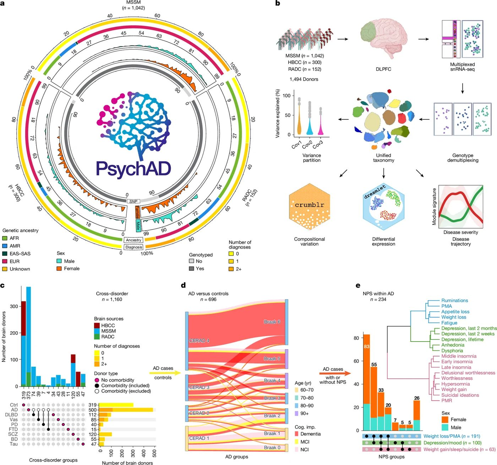
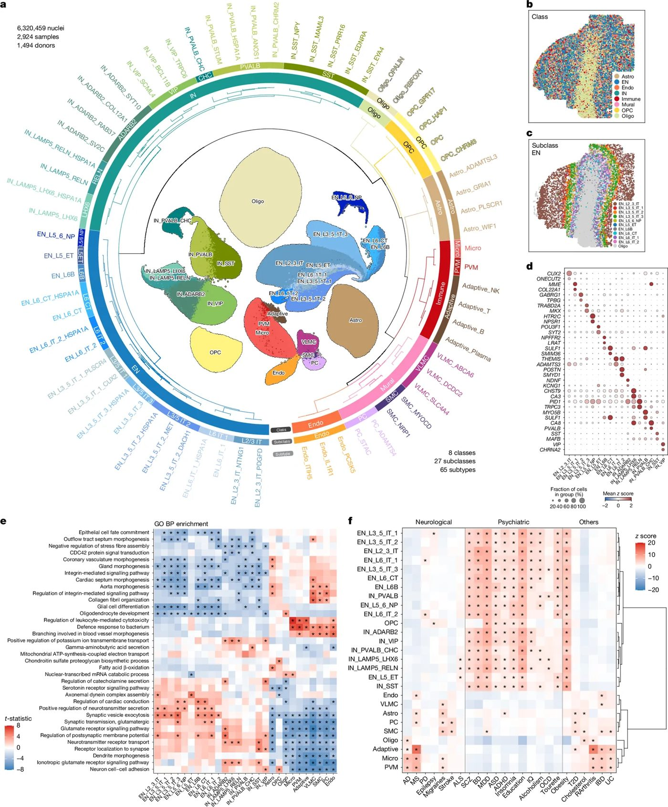
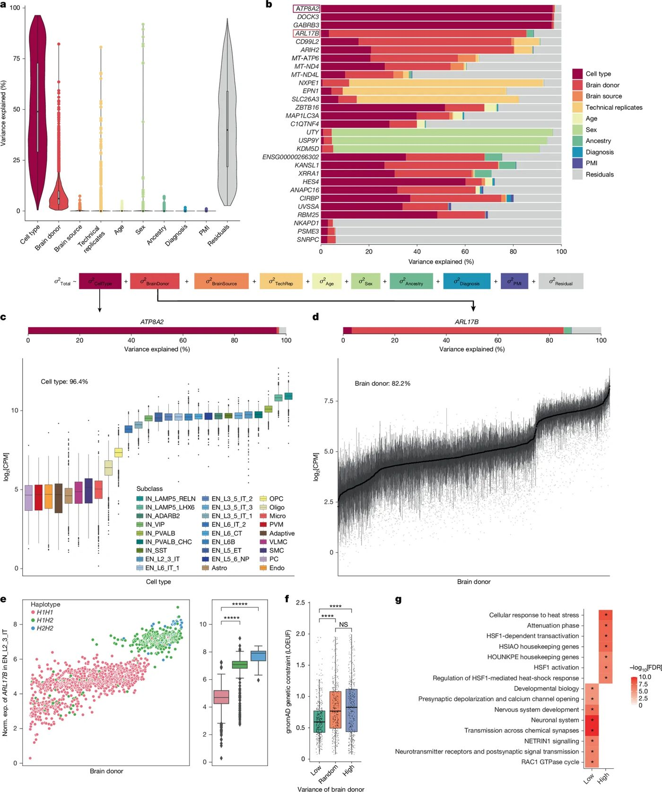
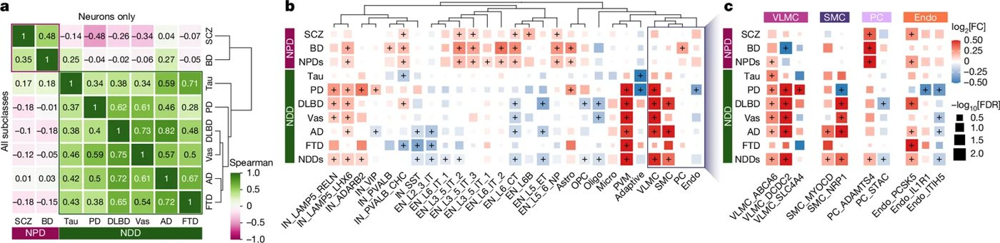
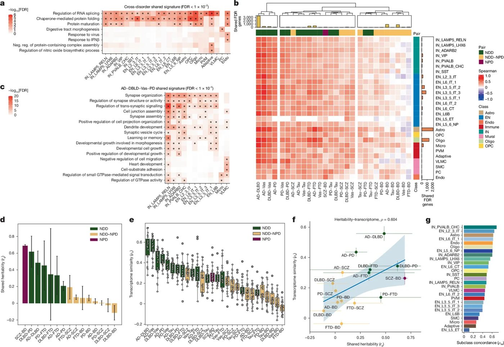
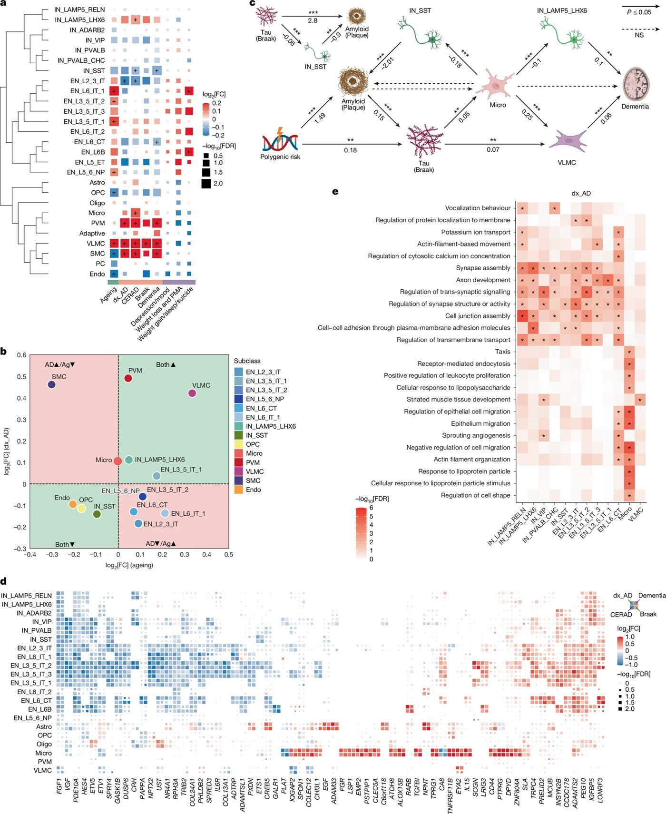
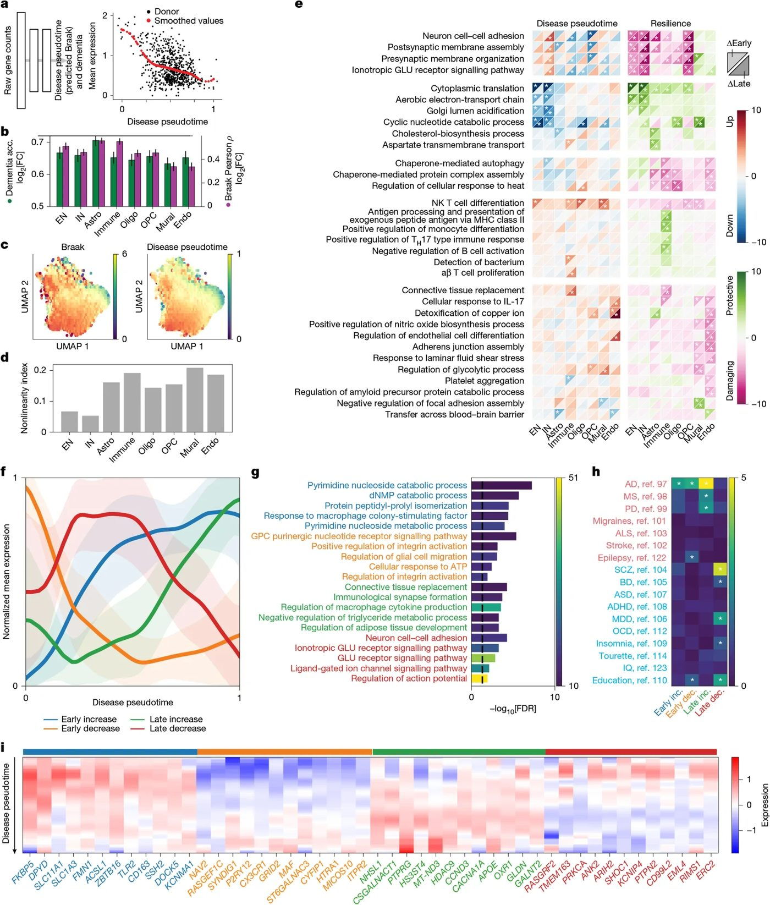
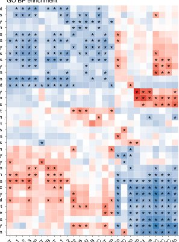

Карта уязвимости мозга: как болезни меняют клетки человека


Полное описание рисунка
1. Обзор когорты PsychAD и дизайна исследования. a, Состав когорты PsychAD, включающей 1494 донора из трех источников тканей: MSSM (n = 1042), HBCC (n = 300) и RADC (n = 152). Показаны демографические данные доноров, включая генетическое происхождение (AFR, африканское; AMR, смешанное американское; EAS, восточноазиатское; SAS, южноазиатское; EUR, европейское; и неизвестное), распределение по полу (мужской и женский) и процент доступных данных генотипирования. Количество диагнозов на одного донора представлено цветными столбцами, различающими лиц с нулем, одним или несколькими диагнозами NDD и NPD. Возраст на момент смерти проиллюстрирован радиальными гистограммами, показывающими вариабельность в зависимости от источника ткани. Распределение по возрасту сгруппировано по интервалам с ограничением 99+ лет. b, Обзор генерации данных и аналитического процесса. Образцы DLPFC из трех источников тканей подверглись мультиплексному snRNA-seq. Библиотеки были разделены по генотипу и аннотированы с использованием унифицированной клеточной таксономии. Последующий анализ включал разделение дисперсии для количественной оценки вклада типа клеток и клинических ковариат в вариацию экспрессии генов, анализ композиционной вариации с использованием crumblr, дифференциальную экспрессию с использованием dreamlet и моделирование траектории заболевания для выявления клеточной и транскрипционной динамики, связанной с прогрессированием заболевания. c, Подгруппа когорты PsychAD (n = 1160 доноров), сфокусированная на сравнении различных расстройств. Эта подгруппа включает группу нейротипичных контрольных лиц (n = 319) и доноров, которым был поставлен один из восьми диагнозов NDD и NPD. Общее количество доноров мозга на группу сравнения показано с разбивкой по источникам мозга (сверху) или по количеству диагнозов на донора (справа). График UpSet (внизу слева) иллюстрирует уникальные и перекрывающиеся фенотипы расстройств, подчеркивая паттерны коморбидности. Для сравнений AD коморбидные случаи не учитывались. Для сравнений, не связанных с AD, коморбидные случаи были включены для обеспечения достаточной статистической мощности анализа. Из-за включения как коморбидных, так и некоморбидных случаев существует перекрытие в количестве доноров между группами расстройств. В результате общее количество доноров, представленных на графике, может превышать фактическое количество уникальных доноров, отражая случаи, когда один и тот же донор появляется в нескольких диагностических пересечениях. d, Подгруппа когорты PsychAD (n = 696), сфокусированная на сравнении фенотипов AD. Сравнение различных показателей тяжести AD, включая плотность невритных бляшек (CERAD), патологию NFT (Braak) и когнитивные нарушения (cog. imp.). Примечание: n = 54 донора с неполными данными о патологии или когнитивном статусе были исключены из визуализации. e, Подгруппа случаев AD (n = 234) использовалась для характеристики сопутствующих NPS при AD. Столбцы представляют пересечение категорий NPS, а вертикальные полосы указывают количество доноров в каждом пересечении. Горизонтальные полосы представляют общее количество доноров в каждой отдельной категории NPS: депрессия и изменения настроения (Depression/mood; n = 100); потеря веса и PMA (Weight loss/PMA; n = 191); и увеличение веса, нарушения сна, суицидальные мысли, чувство вины и психомоторная заторможенность (PMR) (Weight gain/sleep/suicide; n = 63); «no NPSs» представляет доноров AD без каких-либо зарегистрированных NPS. Пропорции доноров дополнительно стратифицированы по полу.
Почему разные заболевания мозга часто проявляются схожими симптомами? Исследователи проанализировали более 6 миллионов клеток из префронтальной коры 1494 доноров. Работа раскрывает, как именно нейроны и вспомогательные клетки меняются при нейродегенерации и психических расстройствах. Это помогает увидеть общие молекулярные механизмы, скрытые за разными диагнозами.
Главное
- Создан атлас из 6,3 млн ядер клеток мозга 1494 доноров.
- Выявлены общие молекулярные механизмы у нейродегенеративных и психических расстройств.
- Тяжелая стадия болезни Альцгеймера связана с ростом иммунных и сосудистых клеток.
Подробнее
Авторы проекта PsychAD использовали метод секвенирования РНК отдельных ядер (snRNA-seq) для изучения дорсолатеральной префронтальной коры (DLPFC). Выборка включила 1494 донора, охватывая нейротипичных людей и пациентов с восемью патологиями, включая болезнь Альцгеймера (AD), болезнь Паркинсона (PD) и шизофрению. Исследователи выделили 27 подклассов клеток, включая глутаматергические и ГАМК-ергические нейроны, а также глиальные и сосудистые элементы.
Анализ показал, что межклеточная вариативность в значительной степени определяется индивидуальными особенностями организма. При сравнении заболеваний выявлены универсальные сигнатуры, связанные с процессингом мРНК и локализацией белков. У пациентов с AD зафиксировано снижение численности нейронов при одновременном росте иммунных и сосудистых клеточных популяций, что коррелирует с тяжестью когнитивных нарушений и нейропсихиатрическими симптомами.
Ограничения
Исследование основано на посмертных образцах тканей, что не позволяет отследить динамику изменений в живом мозге в реальном времени.
Полный перевод статьи
Резюме
Нейродегенеративные и нейропсихиатрические заболевания создают значительную нагрузку на общество и систему здравоохранения. Тем не менее, наше понимание молекулярных механизмов, лежащих в основе этих крайне сложных состояний, остается ограниченным. В данной работе, чтобы глубже изучить этиологию различных заболеваний головного мозга, мы использовали образцы от 1494 уникальных доноров для создания популяционного атласа транскриптомов единичных клеток дорсолатеральной префронтальной коры человека, включающего более 6,3 миллиона отдельных ядер.
Важно
Создан масштабный атлас транскриптомов 6,3 млн ядер из 1494 образцов дорсолатеральной префронтальной коры, охватывающий восемь нейродегенеративных и психиатрических расстройств.
В когорту вошли нейротипичные контрольные субъекты, а также доноры, страдающие восемью распространенными и сложными заболеваниями головного мозга: болезнью Альцгеймера (AD), диффузной болезнью телец Леви (DLBD), сосудистой деменцией (Vas), болезнью Паркинсона (PD), тауопатией, лобно-височной деменцией, шизофренией и биполярным расстройством. Мы показываем, что межиндивидуальная вариабельность составляет существенную часть различий в экспрессии генов. Сравнивая транскриптомную вариабельность при различных заболеваниях, мы выявили универсальные сигнатуры, обогащенные базовыми клеточными функциями, такими как процессинг мРНК и локализация белков.
Пояснение
Транскриптомный атлас — это карта активности всех генов в отдельных клетках, позволяющая понять, какие молекулярные процессы нарушены при болезни.
После исключения этих общих для всех заболеваний сигнатур мы обнаружили более выраженное генетическое и транскриптомное сходство между AD, DLBD, Vas и PD. Кроме того, мы охарактеризовали транскриптомную вариабельность при различных фенотипах AD, отличную от той, что наблюдается при здоровом старении, выявив снижение численности нейронов у лиц с более тяжелой формой AD, сопровождающееся увеличением популяций иммунных и сосудистых клеток. Исследуя нейропсихиатрические симптомы (NPS), часто сопровождающие AD, мы обнаружили повышенное содержание возбуждающих нейронов глубоких слоев, ассоциированное с широким спектром NPS. Построив траектории транскриптома, отражающие прогрессирование AD, мы выявили клеточно-специфические реакции на ранних и поздних стадиях заболевания. Наш атлас болезней дает представление о транскриптомном ландшафте при нейродегенеративных и нейропсихиатрических расстройствах, проливая свет на общие и специфические процессы с участием неврологической, иммунной и сосудистой систем, а также определяя потенциальные мишени для терапевтического вмешательства.
Человеческий мозг — это высокосложный орган, состоящий из миллиардов функционально разнообразных клеток. В условиях патогенного стресса клеточные и молекулярные ответы часто бывают запутанными и контекстуально зависимыми, поэтому понимание их дисфункции при заболеваниях представляет собой сложную задачу. Одноклеточные методы, облегчающие анализ молекулярных изменений, происходящих внутри отдельных клеток, оказались особенно полезными для понимания взаимодействия между различными типами клеток, обнаруженными в сложных тканях, а также роли этих клеток в различных контекстах заболеваний. При болезни Альцгеймера (БА) тщательное изучение клеточной гетерогенности мозга показало, что исследование скоординированных взаимодействий между нейронами и глией, а также селективное истощение уязвимых подтипов тормозных нейронов имеют решающее значение для понимания патологии БА. Создание крупномасштабного атласа заболеваний с одноклеточным разрешением открывает возможность для понимания молекулярных ответов на клеточном уровне и оценки вариабельности транскриптома мозга на популяционном уровне. Большой размер выборки обеспечивает мощность, необходимую для установления надежных базовых условий и достаточного охвата всего спектра патологии заболевания.
Важно
Использование когорты PsychAD из 1494 доноров и 6,3 млн ядер позволило выявить общие транскриптомные уязвимости и молекулярные механизмы, лежащие в основе нейродегенеративных и нейропсихиатрических заболеваний.
Используя атласы различных заболеваний, исследования выявили общие и специфические паттерны нарушений экспрессии генов при основных психиатрических заболеваниях, а также общие генетические факторы, ведущие к молекулярной конвергенции. Таким образом, характеристика общих транскриптомных уязвимостей и патофизиологии в совокупности имеет значительные последствия для раннего лечения и разработки эффективных терапевтических средств. Здесь мы представляем когорту PsychAD, которая состоит из 1494 уникальных доноров мозга, включая нейротипичных контрольных лиц и лиц, страдающих различными нейродегенеративными и нейропсихиатрическими заболеваниями (НПЗ). Сосредоточившись на дорсолатеральной префронтальной коре (DLPFC), мы создали набор данных секвенирования РНК отдельных ядер (snRNA-seq), включающий более 6,3 миллиона ядер, представляющих 27 различных подклассов клеток. Набор данных обладает достаточной мощностью для идентификации молекулярных сигнатур по нескольким признакам с учетом индивидуальной вариабельности. Для поддержки интерпретации и обеспечения будущих анализов мы оценили мощность и вариабельность размера эффекта для разных типов клеток (Методы и Рис. SN).
Пояснение
snRNA-seq (секвенирование РНК отдельных ядер) — метод анализа экспрессии генов, позволяющий изучать транскриптом каждой клетки по отдельности, выделяя ядра из замороженной ткани мозга.
Мы идентифицируем общую транскриптомную уязвимость, определяемую как перекрывающиеся паттерны изменений экспрессии генов при различных заболеваниях, которые указывают на общие патогенные механизмы. Эти общие сигнатуры дают представление о потенциальных молекулярных механизмах раннего вмешательства, которые выходят за рамки традиционных границ заболеваний. Более того, мы обнаружили, что общая транскриптомная уязвимость между расстройствами согласуется с генетической ко-наследуемостью, что позволяет предположить, что общие генетические факторы риска частично обусловливают общие изменения экспрессии генов. Глубокое фенотипирование траекторий БА с использованием тау-патологии и статуса клинической деменции указывает на потенциальную связь между дисфункциями иммунной системы и сосудов головного мозга. В целом, наше исследование предоставляет богатый и всесторонний ресурс для изучения клеточных и молекулярных механизмов функционирования и дисфункции мозга при множественных нейродегенеративных заболеваниях и НПЗ.
Когорта PsychAD включает 1494 уникальных донора (Рис. 1a, Рис. SN 2 и Таблица SN 1). Образцы ткани головного мозга были получены из трех источников: 1042 донора из Нейробиобанка NIH при госпитале Маунт-Синай (MSSM), 300 из Центра коллекции мозга человека (HBCC) и 152 из Центра болезни Альцгеймера Раша (RADC). Когорта охватывает весь постнатальный период жизни от 0 до 108 лет, включает примерно равное количество мужчин (n = 723) и женщин (n = 771) и представляет широкий спектр фенотипов заболеваний, включая БА (AD), деменцию с тельцами Леви (DLBD), сосудистую деменцию (Vas), таупатии (Tau), лобно-височную деменцию (FTD), болезнь Паркинсона (PD), шизофрению (SCZ) и биполярное расстройство (BD). Когорта охватывает разнообразный генетический фон, и более 30% доноров (n = 509) имели неевропейское (EUR) происхождение. Мы оптимизировали унифицированную обработку данных, а также гармонизацию клинических и технических метаданных (Рис. 1b, Рис. SN 1a и Методы). Замороженные образцы мозга были рандомизированы и обработаны партиями по шесть штук. Равное количество ядер из каждого образца объединяли, и каждый пул обрабатывали для двух независимых реакций snRNA-seq для создания технического репликата. После контроля качества (Рис. SN 1c–i) итоговые наборы данных состояли из 6 320 459 ядер.
Полное описание рисунка
1. Обзор когорты PsychAD и дизайна исследования. a, Состав когорты PsychAD, включающей 1494 донора из трех источников тканей: MSSM (n = 1042), HBCC (n = 300) и RADC (n = 152). Показаны демографические данные доноров, включая генетическое происхождение (AFR, африканское; AMR, смешанное американское; EAS, восточноазиатское; SAS, южноазиатское; EUR, европейское; и неизвестное), распределение по полу (мужской и женский) и процент доступных данных генотипирования. Количество диагнозов на одного донора представлено цветными столбцами, различающими лиц с нулем, одним или несколькими диагнозами NDD и NPD. Возраст на момент смерти проиллюстрирован радиальными гистограммами, показывающими вариабельность в зависимости от источника ткани. Распределение по возрасту сгруппировано по интервалам с ограничением 99+ лет. b, Обзор генерации данных и аналитического процесса. Образцы DLPFC из трех источников тканей подверглись мультиплексному snRNA-seq. Библиотеки были разделены по генотипу и аннотированы с использованием унифицированной клеточной таксономии. Последующий анализ включал разделение дисперсии для количественной оценки вклада типа клеток и клинических ковариат в вариацию экспрессии генов, анализ композиционной вариации с использованием crumblr, дифференциальную экспрессию с использованием dreamlet и моделирование траектории заболевания для выявления клеточной и транскрипционной динамики, связанной с прогрессированием заболевания. c, Подгруппа когорты PsychAD (n = 1160 доноров), сфокусированная на сравнении различных расстройств. Эта подгруппа включает группу нейротипичных контрольных лиц (n = 319) и доноров, которым был поставлен один из восьми диагнозов NDD и NPD. Общее количество доноров мозга на группу сравнения показано с разбивкой по источникам мозга (сверху) или по количеству диагнозов на донора (справа). График UpSet (внизу слева) иллюстрирует уникальные и перекрывающиеся фенотипы расстройств, подчеркивая паттерны коморбидности. Для сравнений AD коморбидные случаи не учитывались. Для сравнений, не связанных с AD, коморбидные случаи были включены для обеспечения достаточной статистической мощности анализа. Из-за включения как коморбидных, так и некоморбидных случаев существует перекрытие в количестве доноров между группами расстройств. В результате общее количество доноров, представленных на графике, может превышать фактическое количество уникальных доноров, отражая случаи, когда один и тот же донор появляется в нескольких диагностических пересечениях. d, Подгруппа когорты PsychAD (n = 696), сфокусированная на сравнении фенотипов AD. Сравнение различных показателей тяжести AD, включая плотность невритных бляшек (CERAD), патологию NFT (Braak) и когнитивные нарушения (cog. imp.). Примечание: n = 54 донора с неполными данными о патологии или когнитивном статусе были исключены из визуализации. e, Подгруппа случаев AD (n = 234) использовалась для характеристики сопутствующих NPS при AD. Столбцы представляют пересечение категорий NPS, а вертикальные полосы указывают количество доноров в каждом пересечении. Горизонтальные полосы представляют общее количество доноров в каждой отдельной категории NPS: депрессия и изменения настроения (Depression/mood; n = 100); потеря веса и PMA (Weight loss/PMA; n = 191); и увеличение веса, нарушения сна, суицидальные мысли, чувство вины и психомоторная заторможенность (PMR) (Weight gain/sleep/suicide; n = 63); «no NPSs» представляет доноров AD без каких-либо зарегистрированных NPS. Пропорции доноров дополнительно стратифицированы по полу.
Важно
Когорта PsychAD объединяет 1494 донора с широким спектром нейродегенеративных и психиатрических заболеваний, обеспечивая анализ 6,3 млн ядер.
Для характеристики транскриптомной уязвимости при различных нейропсихиатрических и нейродегенеративных заболеваниях (NDD) мы организовали анализ в три этапа. Во-первых, мы провели кросс-нозологический анализ (Рис. 1c). Чтобы обеспечить аналитическую мощность и интерпретируемость, мы сосредоточились на восьми хорошо представленных расстройствах с четкими патологическими определениями и достаточным количеством доноров, включая сбалансированное число случаев и контролей. В частности, используя подвыборку из 1160 доноров в возрасте не менее 17 лет с минимальными сопутствующими заболеваниями, мы проанализировали шесть NDD (AD, DLBD, Vas, Tau, FTD и PD) и два NPD (SCZ и BD). Чтобы оценить общность транскриптомной уязвимости, мы сравнили доноров с NDD и NPD с базовой группой из 319 нейротипичных контролей.
Пояснение
snRNA-seq (одноядерное РНК-секвенирование) — метод анализа экспрессии генов в отдельных ядрах клеток, позволяющий изучать транскриптомный профиль конкретных типов клеток в сложных тканях, таких как мозг.
Второй этап анализа был сосредоточен на стадиях прогрессирования БА на основе показателей патологических и когнитивных нарушений с использованием подвыборки из 696 человек (Рис. 1d). Чтобы выявить роль конкретных типов клеток в начале заболевания и траектории его развития, мы сравнили две характерные нейропатологические аномалии мозга при БА: накопление бляшек амилоида-β (Aβ), измеренное с использованием шкалы плотности бляшек CERAD, и тау-зависимую нейрофибриллярную патологию (NFT), измеренную с использованием стадий Браака, наряду с когнитивными нарушениями. На третьем этапе мы исследовали нейропсихиатрические симптомы (NPS) у 234 человек с БА (Рис. 1e и Рис. SN 1b). NPS являются ключевыми признаками БА и часто встречаются у пациентов с деменцией. Мы широко классифицировали NPS на три группы: (1) депрессия или расстройства настроения, (2) потеря веса или психомоторное возбуждение (PMA), и (3) увеличение веса, бессонница или суицидальные мысли — на основе оценок совместной встречаемости, разделяющих молекулярные механизмы, которые приводят к увеличению распространенности по мере тяжести заболевания.
Для понимания гетерогенности тканей коры головного мозга человека в контексте заболеваний необходима таксономия типов клеток, устойчивая к старению, фенотипам заболеваний и различным систематическим ошибкам, связанным с отбором проб и техническими факторами. После унифицированной вычислительной обработки, контроля качества и нормализации партий библиотек snRNA-seq, представляющих 1494 образца, обработанных в дубликатах (Методы), мы аннотировали типы клеток DLPFC человека, используя таксономию клеток DLPFC приматов и первичной моторной коры человека в качестве базовых референсов. Полученная таксономия была организована в три иерархических уровня, идентифицирующих восемь широких классов клеток, 27 подклассов и 65 функционально различных подтипов (Рис. 2a и Таблица SN 2). Каждый уровень иерархии аннотаций представляет собой срез дендрограммы кластеризации. На верхнем уровне класс определяет восемь основных типов клеток, включая два широких типа нейронов: глутаматергические возбуждающие (EN) и ГАМК-ергические тормозные нейроны (IN); три типа глиальных клеток: астроциты (Astro), олигодендроциты (Oligo) и клетки-предшественники олигодендроцитов (OPCs); и три не-нейрональных типа клеток: иммунные клетки (Immune), муральные и сосудистые клетки (Mural) и эндотелиальные клетки (Endo). Последующие уровни, а именно подкласс и подтип, были получены путем итеративной перекластеризации подмножества клеток по матрице генов с использованием нового набора вариабельных генов, релевантных для конкретного типа клеток (см. раздел «Определение клеточной таксономии с использованием итеративной кластеризации» в Методах). Клеточная таксономия была согласованной и хорошо представленной во всех трех источниках мозга (Рис. SN 3a,b). Наша аннотация подтипов наиболее гранулярного уровня была надежной и инвариантной к донорским и техническим переменным (Рис. SN 3c).


Полное описание рисунка
2. Унифицированная обработка атласа транскриптомики одиночных ядер и иерархическая клеточная таксономия. a, Иерархическая структура клеточной таксономии на основе транскриптома. Таксономическая аннотация на трех уровнях гранулярности: класс (n = 8), подкласс (n = 27) и подтип (n = 65). b, Пространственное распределение основных классов клеток. c, Пространственное распределение подклассов EN. d, Маркеры, определяющие нейрональные подклассы. e, Функциональное обогащение клеточных подклассов с использованием GO BP. Специфичные для типа клеток гены были отобраны для каждого подкласса с использованием анализа дифференциальной экспрессии генов, сравнивая один кластер с остальными на уровне подклассов и фильтруя гены с FDR ≤ 0,05. f, Обогащение наследственных признаков для клеточных подклассов с использованием предыдущих GWAS (scDRS). AD96, MS97, PD98, фокальная эпилепсия (epilepsy)99, мигрени100, инсульт101, боковой амиотрофический склероз (ALS)102, SCZ103, BD104, большое депрессивное расстройство (MDD)105, расстройство аутистического спектра (ASD)106, синдром дефицита внимания и гиперактивности (ADHD)107, бессонница108, уровень образования (education)109, интеллект (IQ)110, алкоголизм111, обсессивно-компульсивное расстройство (OCD)112, синдром Туретта113, ожирение114, сахарный диабет 2 типа (T2D)115, общий холестерин (cholesterol)116, ревматоидный артрит (RArthritis)117, воспалительные заболевания кишечника (IBD)118 и язвенный колит (UC)119.
Важно
Создана иерархическая таксономия из 8 классов, 27 подклассов и 65 подтипов клеток DLPFC, устойчивая к техническим вариациям и пригодная для анализа патологий.
Нейрональные клетки составили 38,4% (EN 23,0% и IN 15,4%) от всех клеток, при этом олигодендроциты были следующими по численности — 36,1%. Основные типы и подтипы клеток хорошо соответствовали предыдущим таксономиям клеток DLPFC (Рис. SN 3d–f и Таблица SN 11). Уровень подклассов разделил классы EN и IN на 10 и 7 подклассов соответственно (Рис. SN 3g,h). Различные типы нейронов, особенно EN, организованы в шесть горизонтальных слоев (L1–L6), которые различаются как по цитоархитектонике, так и по функции. Данные пространственной транскриптомики in situ были использованы для подтверждения того, что подклассы EN пространственно различимы и находятся в соответствующих слоях неокортекса (Рис. 2b,c и Рис. SN 4j). Подклассы EN были обозначены в соответствии с их ламинарной организацией (L2–6) и характеристиками аксональных проекций (интрателенцефальные (IT), экстрателенцефальные (ET), проекции ближнего действия).
Пояснение
snRNA-seq (одноядерное РНК-секвенирование) — метод анализа экспрессии генов в отдельных ядрах клеток, позволяющий изучать ткани, которые трудно диссоциировать на целые клетки. [!warning] Исследование основано на анализе образцов ткани мозга человека; корреляции между типами клеток и заболеваниями требуют дальнейшей функциональной проверки.
Транскриптомная вариабельность зависит от генетических различий между индивидуумами, фенотипов и технических факторов. Чтобы понять детерминанты общей вариации транскриптома в нашей когорте, мы использовали данные snRNA-seq популяционного масштаба для разделения дисперсии экспрессии генов по клеточным переменным (включая тип клеток и долю митохондриальных и рибосомальных генов), переменным на уровне доноров (включая ID индивидуума, возраст, пол, генетическое происхождение и диагноз) и техническим переменным (включая источник образца ткани, посмертный интервал, технические реплики и глубину секвенирования) (Рис. 3a и Методы). В среднем 50,5% общей дисперсии экспрессии всех генов можно отнести к вариации типов клеток, в то время как межъиндивидуальная вариация объясняет 7,5%, а необъяснимая остаточная вариация составляет 41,1%. Оставшиеся переменные объясняли в среднем менее 1% общей дисперсии. Мы приоритизировали гены с наибольшей вариацией экспрессии по переменным (Рис. 3b и Рис. SN 6b–f).


Полное описание рисунка
3. Источники транскриптомной вариации. a, Разделение транскриптомной вариации по техническим и клиническим ковариатам. n = 34 890 генов, исследованных в 2924 библиотеках от 1494 доноров по 27 подклассам. Визуализировано n = 9256 белок-кодирующих генов. На диаграммах размаха границы ящика указывают первый и третий квартили, центральная линия представляет медиану, а «усы» простираются до минимальных и максимальных значений. b, Топ-гены для каждой категории технических и клинических ковариат. c, Экспрессия гена ATP8A2 в разных типах клеток. Типы клеток на уровне подклассов отсортированы на основе медианных уровней экспрессии. Уровни экспрессии были нормализованы по глубине (norm. exp.) с использованием количества на миллион (CPM) и затем логарифмически преобразованы (log2). n = 1494 донора, исследованных по 27 подклассам. На диаграммах размаха границы ящика указывают первый и третий квартили, центральная линия представляет медиану, а «усы» простираются до 1,5× межквартильного размаха. Точки за пределами «усов» считались выбросами. d, Экспрессия гена ARL17B у доноров. Доноры отсортированы на основе медианного значения. e, Стратификация гаплотипов MAPT с использованием нормализованной экспрессии ARL17B в нейронах EN_L2_3_IT. Статистический анализ проводился с использованием критерия суммы рангов Уилкоксона между гаплотипами с использованием двусторонней альтернативной гипотезы. *P ≤ 1 × 10−5. Точное значение P между H1H1 и H1H2 составило 1,78 × 10−116; а между H1H1 и H2H2 — 2,41 × 10−19. Исследовано n = 1380 доноров с генотипами. На диаграммах размаха границы ящика указывают первый и третий квартили, центральная линия представляет медиану, а «усы» простираются до 1,5× межквартильного размаха. Точки за пределами «усов» считались выбросами. f, Генетические ограничения групп генов, измеренные по показателю LOEUF (верхняя граница 95% доверительного интервала для отношения наблюдаемых/ожидаемых вариантов с высокой достоверностью предсказания потери функции (pLoF); более низкие значения указывают на более высокие генетические ограничения). «Low» указывает на гены в нижнем 5% квантиле вариации доноров мозга, а «high» указывает на гены в верхних 5%. «Random» указывает на случайные 5% генов, которые не входят ни в категорию «low», ни в «high». Статистический анализ проводился с использованием критерия суммы рангов Уилкоксона, исследовано n = 8603 белок-кодирующих гена. Визуализировано n = 1247 генов. На диаграммах размаха границы ящика указывают первый и третий квартили, центральная линия представляет медиану, а «усы» простираются до 1,5× межквартильного размаха. Точки за пределами «усов» считались выбросами. g, Функциональное обогащение для генов с высокой или низкой межиндивидуальной вариацией. SRP, сигнал-распознающая частица; HSIAO_HOUSEKEEPING_GENES, «домашние» гены, идентифицированные как экспрессирующиеся в 19 нормальных тканях120; HOUNKPE_HOUSEKEEPING_GENES, 1130 «домашних» генов человека и мыши121. *P ≤ 0,05, P ≤ 0,01, *P ≤ 0,001, ****P ≤ 0,0001.
Важно
Основная часть вариабельности экспрессии генов (50,5%) обусловлена типом клеток, тогда как межъиндивидуальные различия объясняют 7,5%, а технические факторы — менее 1%.
Среди генов с высокой вариацией по типам клеток (включая ATP8A2, DOCK3 и GABRB3) большинство дифференциально экспрессируются между нейрональными и ненейрональными типами клеток (Рис. 3c). Как и ожидалось, гены, варьирующие в зависимости от пола, располагались в половых хромосомах (Рис. SN 6d), в то время как гены с высокой вариацией в зависимости от источника ткани были преимущественно митохондриальными (Рис. SN 6e), что, возможно, связано с техническими различиями в физиологических и средовых факторах при диссекции и обработке образцов. Гены с высокой вариацией в зависимости от диагноза были вовлечены в реакции на стресс и функции поддержания жизнедеятельности (housekeeping genes) (Рис. SN 6a,f). Лидирующий ген, холодоиндуцируемый РНК-связывающий белок (CIRBP), реагирует на гипотермический стресс и защищает клетки от нейротоксичности, вызванной гипоксией; было показано, что его экспрессия обратно коррелирует с выживаемостью пациентов при раке. Заметим, что помимо вариации по диагнозам, CIRBP также имел наибольшую вариацию в зависимости от посмертного интервала (PMI).
Пояснение
snRNA-seq (секвенирование РНК единичных ядер) — метод анализа транскриптома отдельных клеток, позволяющий изучать активность генов в сложных тканях, таких как мозг, где клетки тесно переплетены.
Поскольку данный подход исследует вариацию экспрессии, общую для разных типов клеток, низкая доля дисперсии, объясняемая диагнозом, указывает на необходимость анализа, специфичного для типов клеток. Примечательно, что межъиндивидуальные различия объясняли 82,2% вариации экспрессии гена GTPазы 17B, подобной фактору АДФ-рибозилирования (ARL17B) (Рис. 3d). Несколько соседних генов, таких как субъединица 1 регуляторного комплекса NSL KAT8 (KANSL1) и ARL17A (паралог ARL17B), также имели высокую межъиндивидуальную вариацию (Рис. SN 6c). ARL17B и KANSL1 локализованы в ассоциированном с заболеваниями локусе MAPT (17q21.31), часто встречаются в виде слитого транскрипта (KANSL1::ARL17B), подвергаются полиморфной транслокации и вовлечены в неврологические расстройства, включая БАС, БП и РС.
Осторожно
Наблюдаемые ассоциации генов с диагнозами (например, БП или AD) основаны на посмертных образцах тканей, что требует осторожности при интерпретации причинно-следственных связей.
Для изучения возможных генетических причин вариации экспрессии мы проанализировали нормализованную экспрессию генов на уровне доноров, стратифицированную по гаплотипам MAPT (Рис. 3e и Методы). Мы наблюдали два различных паттерна экспрессии ARL17B, которые потенциально могут быть связаны с гаплотипами H1 и H2 MAPT, причем более низкая экспрессия ассоциирована с генотипом H1H1. Мы наблюдали стратификацию гаплотипов по генетическому происхождению: генотип H2H2 встречался почти исключительно у лиц европейского происхождения (EUR), что согласуется с предыдущими отчетами (Рис. SN 6g). Мы также воспроизвели предыдущий результат, указывающий на то, что гаплотип H1 ассоциирован с предрасположенностью к БП, и обнаружили, что генотип H1H1 повышает риск БП с отношением шансов (OR) 4,125 (Рис. SN 6h; P ≤ 0,0273), хотя это значение значительно выше, чем сообщалось ранее (1,42 или 1,46). Более того, мы проверили вклад гаплотипа H1 в развитие БА среди носителей, не имеющих аллеля APOE4, но не обнаружили значимой ассоциации (P ≤ 0,302).
Гаплотип H1 проявлял цис-регуляторные эффекты на несколько генов вблизи локуса MAPT, значимых для нейродегенерации (Рис. SN 6i). В частности, гаплотипы H1 в нейронах и астроцитах были ассоциированы с повышенной экспрессией генов LRRC37A2/A3, содержащих лейцин-богатые повторы. Было показано, что белки LRRC37A взаимодействуют с α-синуклеином и колокализуются с тельцами Леви в мозге при БП. Еще одним геном, активируемым гаплотипом H1, был PLEKHM1 (член 1 семейства M, содержащего домен гомологии плекстрина), который был связан с предрасположенностью к БП в исследованиях GWAS. Гаплотип H1 также демонстрировал межхромосомные эффекты, в частности на PDE8B (фосфодиэстеразу 8B), ген, вовлеченный в двигательные расстройства. Кроме того, гетерогенный ядерный рибонуклеопротеин K (HNRNPK), ген, участвующий в регуляции синаптической пластичности, был подавлен гаплотипом H1.
Пояснение
Гаплотип — группа генов или аллелей, которые наследуются вместе от одного родителя. Локус MAPT часто изучается в контексте нейродегенерации из-за его сложной структуры и влияния на экспрессию соседних генов.
Гены с более низкой межъиндивидуальной вариацией имели более строгие генетические ограничения, измеренные с помощью показателя LOEUF (верхняя граница доли наблюдаемых/ожидаемых вариантов с потерей функции) из базы gnomAD или метрики ограничения GeneBayes (Shet) (Рис. 3f и Рис. SN 6l). Эти консервативные гены функционально вовлечены в развитие нервной системы и синаптические функции, что указывает на консервативность генной программы развития нейронов у разных индивидуумов (Рис. SN 6m). С другой стороны, гены с высокой межъиндивидуальной вариабельностью были обогащены функциями базового клеточного метаболизма (то есть гены поддержания жизнедеятельности, метаболизм РНК и, в частности, клеточный ответ на тепловой стресс), что подтверждает предыдущие результаты (Рис. 3g и Рис. SN 6a,m).
Используя 318 нейротипичных доноров в качестве базовой линии, мы систематически оценивали вариации клеточного состава дорсолатеральной префронтальной коры (DLPFC) при восьми различных нейродегенеративных (NDD: AD, DLBD, Vas, Tau, PD и FTD) и нейропсихиатрических (NPD: SCZ и BD) заболеваниях. Анализируя все типы клеток на уровне подклассов, мы обнаружили, что общие изменения клеточного состава четко стратифицируются по группам NDD и NPD, формируя отдельные кластеры (Рис. 4a). В среднем корреляции были выше при фокусировке исключительно на нейронах, что подчеркивает их критическую роль в этиологии неврологических заболеваний. Примечательно, что более сильное сходство наблюдалось между DLBD и обоими состояниями — AD и Vas. Кроме того, были отмечены сходства между FTD–AD (все клетки) и FTD–Tau (нейроны).


Полное описание рисунка
4. Вариация состава типов клеток при различных расстройствах: сравнение NDD и NPD с нейротипичным контролем. a, Попарные корреляции Спирмена долей типов клеток у доноров для каждого расстройства. Иерархическая кластеризация на основе нейронального состава подчеркивает разделение между NPD и NDD. Корреляции с использованием всех клеточных подклассов (под диагональю) или только нейрональных типов клеток (над диагональю). b, log2-преобразованные изменения кратности (fold changes) в вариации каждого подкласса (столбцы) относительно контроля по восьми расстройствам (строки). Метки NPD и NDD отражают сводные данные по группам для нескольких состояний. c, Вариация состава на уровне подтипов в классе сосудистых клеток. Интенсивность цвета указывает на размер эффекта, а размер точки отражает статистическую значимость корреляций.
Важно
Изменения клеточного состава DLPFC позволяют четко разделить NDD и NPD, при этом NDD характеризуются избытком не-нейрональных клеток, а NPD — увеличением доли нейронов глубоких слоев.
Дальнейшее изучение каждого подкласса выявило значительное перекрытие в распространенности нейрональных и глиальных типов клеток внутри одного класса заболеваний (Рис. 4b и Таблица SN 3). В частности, NDD характеризовались более высокой численностью не-нейрональных клеток, особенно VLMC и других типов сосудистых клеток (Рис. SN 7c,e,f), а также повышением уровня специфических подклассов тормозных нейронов, а именно IN_LAMP5_RELN, IN_LAMP5_LHX6 и IN_ADARB2. Напротив, NPD были преимущественно связаны с увеличением количества нейрональных клеток, особенно возбуждающих нейронов (EN) глубоких слоев L5–6.
Пояснение
VLMC (сосудистые лептоменингеальные клетки) — это фибробластоподобные клетки, формирующие барьерные структуры мозга, которые играют ключевую роль в поддержании гематоэнцефалического барьера.
Чтобы дополнительно выявить специфические подтипы, ответственные за изменения состава сосудистых клеток, мы использовали аннотацию на уровне подтипов для анализа вариаций состава при 8 NDD и NPD (Рис. 4c и Рис. SN 7d). На основе этого мы определили доминирующие подтипы каждого подкласса, которые дополнительно дифференцировали NDD и NPD. Например, сосудистые лептоменингеальные клетки (VLMC) являются фибробластами мозга, формирующими барьер, и транскрипционно разделяются на три подтипа: два менингеальных VLMC (VLMC_DCDC2 и VLMC_SLC4A4) и один периваскулярный VLMC (VLMC_ABCA6). Наш анализ на уровне подтипов указывает на поляризованный ответ менингеальных VLMC_DCDC2, чье увеличение доли специфически ассоциировано с большинством NDD.
Анализ сигнатур экспрессии генов при различных расстройствах позволяет выявить общие молекулярные пути, что способствует улучшению диагностики и разработке таргетной терапии. В связи с этим мы стремились оценить степень общности между нейродегенеративными (NDD) и нейропсихиатрическими (NPD) заболеваниями. Используя подход псевдообъединения (pseudobulk) и регрессионное моделирование с учетом точности для крупномасштабных наборов данных одиночных клеток, реализованное в программном обеспечении dreamlet (Методы), мы провели комплексный анализ дифференциально экспрессируемых генов (DEG) при восьми различных NDD и NPD. После идентификации DEG для каждого контраста заболеваний и источника ткани мы провели стандартный частотный метаанализ с фиксированными эффектами по трем источникам тканей для определения консенсусных сигнатур признаков заболеваний. Затем мы применили многомерный байесовский метаанализ по типам клеток и признакам заболеваний для получения апостериорных оценок размера эффекта и апостериорной вероятности того, что каждый эффект отличен от нуля. Используя метод составного тестирования, мы применили эти результаты для оценки апостериорных вероятностей того, что каждый эффект специфичен для конкретного признака или является общим для нескольких признаков. Затем мы оценили, с учетом специфики типов клеток, общность между заболеваниями и разложили общие эффекты заболеваний на общие и специфические для заболевания компоненты (Таблица SN 4).
Важно
Анализ показал, что сигнатуры при различных расстройствах имеют высокую степень общности эффектов (Рис. SN 8a), охватывая процессы сплайсинга и процессинга мРНК, а также локализацию белков в митохондриях (Рис. 5a и Рис. SN 8b).


Полное описание рисунка
5. Вариация экспрессии генов при различных расстройствах. a, Пути, вовлеченные в общие изменения экспрессии генов при восьми заболеваниях мозга. Показан гипергеометрический тест с FDR ≤ 0,01. Neg. reg., отрицательная регуляция. b, Сходство транскриптомов между парами заболеваний, измеренное с помощью корреляции Спирмена. Общие для заболеваний гены исключены из сравнения. c, Пути, вовлеченные в общие сигнатуры AD, DLBD, Vas и PD. Показан гипергеометрический тест с FDR ≤ 0,001. d, Оценочная общая наследуемость между парами заболеваний с использованием регрессии баллов LD (LDSC). Данные представляют собой rg ± s.e. из оценки LDSC. Исследовано n = 1 290 028 SNP из референсной панели. e, Сходство транскриптомов, измеренное с помощью корреляции Спирмена. Каждая точка представляет корреляцию между двумя признаками в пределах конкретного подкласса. Диаграмма размаха суммирует распределение этих корреляций по всем 27 подклассам. Исследовано n = 756 ко-экспрессий (28 пар признаков на 27 подклассов). На диаграммах размаха границы ящика указывают первый и третий квартили, центральная линия представляет медиану, а «усы» простираются до 1,5× межквартильного размаха. Точки за пределами «усов» считались выбросами. f, Корреляция между общей наследуемостью и медианным сходством транскриптомов, рассчитанная с использованием коэффициента корреляции Спирмена. Погрешности показывают 95% доверительные интервалы. g, Специфическая для подкласса конкордантность (ρss) между общей наследуемостью и сходством транскриптомов. Коэффициент корреляции Спирмена был рассчитан с использованием сходства транскриптомов каждого подкласса.
Мы продемонстрировали, что сигнатуры, общие для различных расстройств, затрагивают гены, критически важные для нормального функционирования клеток, что согласуется с омнигенной моделью риска заболеваний и подтверждает плейотропность этих генов, влияющих на несколько расстройств как генетически, так и транскрипционно. Гены со специфическими для заболевания эффектами демонстрировали более высокую нагрузку редкими вариантами по сравнению с генами с общими эффектами (Рис. SN 8e), при этом статистически значимое обогащение наблюдалось в интернейронах VIP+ и PVALB+. Хотя это подтверждает значимость специфических для заболевания компонентов для фундаментальной биологии заболеваний, сигнал был ограничен подмножеством типов клеток. Чтобы облегчить идентификацию ключевых функциональных генов, значимых для заболеваний, мы исключили гены с общими эффектами из общих профилей экспрессии DEG. Используя остаточные специфические для заболевания эффекты, мы количественно оценили попарное транскриптомное сходство между признаками (Рис. 5b). Сходство между парами NDD или NPD было выше по сравнению с контрастом NDD–NPD, при этом AD, DLBD, Vas и PD оказались наиболее схожими.
Пояснение
Метод псевдообъединения (pseudobulk) объединяет данные отдельных клеток в профили, имитирующие объемные ткани, для повышения статистической мощности, а омнигенная модель предполагает, что риск заболевания определяется множеством генов, экспрессируемых в соответствующих типах клеток.
Последующий метаанализ с использованием специфических для заболевания эффектов этих четырех транскриптомно схожих признаков выявил вовлеченность путей развития нейронов и синаптической сигнализации в интернейронах (IN_LAMP5_RELN, IN_ADARB2 и IN_PVALB), а также развития сосудистой системы в подклассе VLMC (Рис. 5c и Рис. SN 8c). Сравнение попарного транскриптомного сходства с попарной ко-наследуемостью признаков (общая генетическая вариация) позволяет оценить вклад общих генетических влияний на молекулярные фенотипы. Мы рассчитали общую наследуемость (r_g) между парами заболеваний с использованием GWAS и обнаружили, что пары внутри NDD или NPD демонстрировали более высокую степень общей наследуемости (т.е. DLBD–PD, SCZ–BD) по сравнению с парами, охватывающими NDD и NPD (Рис. 5d). Количественная оценка попарного транскриптомного сходства ( ho_s) между NDD и NPD выявила различную степень транскриптомного перекрытия, причем некоторые из них демонстрировали высокое сходство, особенно в таких парах заболеваний, как AD и DLBD (Рис. 5e). Коррелируя общую наследуемость со средним транскриптомным сходством по типам клеток, мы получили конкордантность наследуемости и транскриптома (r_g - ho_s), которая указала на сильную положительную корреляцию (Спирменовская ho = 0.604) между генетическим и транскриптомным сходством (Рис. 5f и Рис. SN 8f).
Осторожно
Результаты основаны на метаанализе существующих данных; корреляция между генетическим и транскриптомным сходством не доказывает прямую причинно-следственную связь, а лишь указывает на сопряженность молекулярных и генетических архитектур.
Результаты показывают, что заболевания с более высоким генетическим перекрытием также, как правило, имеют более схожую транскриптомную дисрегуляцию, что позволяет предположить, что общие транскриптомные уязвимости сопряжены с лежащей в их основе генетической архитектурой — результат, который подтверждает предыдущие наблюдения. Затем мы расширили сравнение r_g - ho_s, рассмотрев транскрипционную конкордантность для каждого типа клеток (Рис. 5g и Рис. SN 8d). Среди всех типов клеток канделябровидные клетки (IN_PVALB_CHC), подмножество ГАМК-ергических интернейронов, имели наибольшую конкордантность с попарной наследуемостью признаков. В целом, наш подход позволил нам разделить сигнатуры заболеваний на общие и специфические компоненты, показав, что основные сигнатуры заболеваний имеют значительное перекрытие в экспрессии генов и генетическом риске между NDD и NPD. Эти результаты расширяют наше понимание механизмов заболеваний мозга, прокладывая путь к новым терапевтическим стратегиям, направленным на общие или специфические пути.
Далее мы сосредоточились на характеристике транскриптомной вариабельности при БА, включая анализ сравнений «случай-контроль» и различных фенотипов, отражающих тяжесть заболевания, таких как плотность бляшек (оценки CERAD), прогрессирование NFT (стадия по Брааку) и уровень когнитивных нарушений (например, CDR). Вариации в клеточном составе выявляют отчетливые паттерны, связанные с патологиями БА по сравнению с нормальным старением (Рис. 6a, Рис. SN 9a и Таблица SN 5), что согласуется с предыдущими исследованиями (Рис. SN 10a,b). Кроме того, мы воспроизвели наши результаты, используя опубликованный набор данных MERFISH, показав, что наблюдаемое изменение устойчиво к используемой технологии (Рис. SN 10c). Сравнивая композиционные сдвиги при нормальном старении и БА (Рис. 6b), мы выявили специфическое для БА увеличение количества гладкомышечных клеток (SMC) — типа сосудистых клеток, количество которых обычно снижается с возрастом, что предполагает специфическую для БА уязвимость этих клеток. Аналогичным образом, изменения в большинстве возбуждающих нейронов были дискордантными, что позволяет предположить, что механизмы, приведшие к гибели нейронов, были специфичны для БА. Примечательно, что изменения, более выраженные при БА, такие как увеличение количества тормозных нейронов LAMP5+LHX6+ (IN_LAMP5_LHX6) и потеря тормозных нейронов SST+ (IN_SST) при более высоких оценках CERAD, указывают на потенциальную связь между этим подтипом нейронов и Aβ-патологией. Более того, потеря нейронов L2–3 IT при БА (на основе сравнений «случай-контроль» и CERAD), которая не проявляется при нормальном старении, предполагает специфическую уязвимость этого подтипа нейронов к БА. Затем мы экспериментально подтвердили композиционные сдвиги с помощью RNAscope (Методы), подтвердив снижение количества возбуждающих нейронов L2–3 IT и тормозных нейронов SST+, а также распространенность VLMC при БА (Рис. SN 9e,f). В совокупности наши результаты подчеркивают клеточную специфичность уязвимости при БА.


Полное описание рисунка
Транскриптомная вариабельность при патологии БА. a, Анализ композиционной вариабельности с использованием нормального старения, различных показателей патологии БА (бинарный диагноз БА (dx_AD), оценка CERAD, стадии по Брааку и порядковая шкала деменции) и трех категорий НПС при БА. b, Сравнение композиционных изменений между старением (Ag) и БА. Зеленый цвет указывает на согласованные изменения. Красный цвет указывает на несогласованные изменения. Показаны только подклассы, имеющие как минимум один статистически значимый контраст (FDR). c, Анализ причинно-следственного посредничества с использованием PRS, среднего количества бляшек, стадий по Брааку и шкалы деменции. Для моделирования использовались CLR-преобразованные доли подклассов. Статистическая значимость указана над стрелкой (для оценки значений P использовался бутстреппинг; *P ≤ 0,001, P ≤ 0,01 и *P ≤ 0,05), цифры под стрелкой указывают коэффициенты. Эффекты опосредования интернейронов SST+ на накопление амилоидных бляшек (Aβ) показаны отдельно. d, Дифференциально экспрессирующиеся гены (DEG) при фенотипах БА. Мета-анализ проводился между банками мозга. Показаны наиболее значимые гены (FDR < 0,01 и размер эффекта ≥ 0,35). e, Функциональный анализ обогащения DEG по подклассам с использованием путей GO BP. Показаны результаты с FDR ≤ 0,01, определенные с помощью гипергеометрического теста. Термины GO были сокращены с использованием rrvgo.
Важно
Анализ показал, что при БА наблюдается специфическое увеличение количества гладкомышечных клеток и потеря нейронов L2–3 IT, что подтверждает клеточную специфичность уязвимости при данном заболевании. [!tip] RNAscope — это метод визуализации РНК в тканях, позволяющий точно определить локализацию и количество молекул мРНК в отдельных клетках.
Чтобы лучше понять транскриптомную вариабельность при БА и определить наиболее затронутые подклассы клеток, мы проанализировали изменения в случаях БА, обусловленных сопутствующими состояниями. По оценкам, более 80% пациентов с БА демонстрируют как минимум один нейропсихиатрический симптом (NPS) в течение болезни, что существенно влияет на клинический исход, предполагая наличие общих молекулярных механизмов между серьезными психическими расстройствами и БА. Для оценки типов клеток, связанных с распространенностью NPS, мы применили анализ композиционной вариативности к трем категориям NPS на основе оценок их совместной встречаемости. Примечательно, что, используя группы пациентов с БА с NPS и без них, сопоставимые по возрасту (Рис. SN 9b), мы обнаружили, что у пациентов с БА, испытывающих потерю веса и PMA, увеличено соотношение возбуждающих нейронов, особенно нейронов глубоких слоев L5–6 (Рис. 6a и Рис. SN 9a,c,d). Наши результаты подтверждают предыдущие данные о том, что изменения в более глубоких слоях префронтальной коры (L5–6) связаны с определенными типами NPS. После идентификации уязвимых подклассов клеток при БА мы задались вопросом, являются ли их роли в патологии БА повреждающими, защитными, причинными или производными. Как показано в предыдущих исследованиях, мы использовали медиационный анализ для расшифровки причинно-следственных связей между различными каскадами событий, ведущими к началу и прогрессированию БА. Мы провели анализ на основе гипотезы о том, что полигенный риск (AD PRS; Методы) способствует накоплению бляшек (средняя плотность невритных бляшек), что, в свою очередь, влияет на прогрессирование тау-патологии (стадия по Брааку), приводя к деменции. Мы протестировали подклассы, состав которых значительно изменился в любом из контрастов БА (FDR < 0,05), и установили, что микроглия, VLMC, тормозные нейроны SST+ и LAMP5+LHX6+ демонстрируют значительные средние причинно-следственные медиационные эффекты (ACME, P < 0,05) (Рис. 6c и Таблица SN 13). Помимо прямого влияния полигенного риска на тау-патологию, мы наблюдали значительные косвенные эффекты, опосредованные накоплением бляшек (ACME = 0,0903, P < 2 × 10−16). Прогрессирование тау-патологии приводит к увеличению количества VLMC, опосредованному увеличением количества микроглии (ACME = 0,00477, P = 0,005). И наоборот, увеличение количества микроглии приводит к уменьшению количества тормозных нейронов LAMP5+LHX6+. Такие изменения в уровнях как VLMC (ACME = 0,00515, P = 0,0002), так и тормозных нейронов LAMP5+LHX6+ (ACME = −0,00269, P = 0,031), по-видимому, усугубляют деменцию. Кроме того, накопление бляшек смягчается тормозными нейронами SST+ (ACME = 0,1475, P < 2 × 10−16). Увеличенное количество микроглии снижает количество тормозных нейронов SST+ (коэф. = −0,18, P = 5,04 × 10−7), как и повышенный уровень тау (коэф. = −0,06, P = 1,82 × 10−4), что способствует большему накоплению бляшек (коэф. = −2,01, P = 7,47 × 10−6).
Осторожно
Исследование основано на корреляционном анализе и математическом моделировании медиации, что не всегда эквивалентно установлению прямой причинно-следственной связи в биологических системах.
Чтобы определить, как генные программы изменяются в ответ на возрастающую тяжесть патологии БА, мы охарактеризовали дифференциально экспрессируемые гены (DEG) в 27 подклассах (Рис. 6d, Рис. SN 11b и Таблица SN 6). В целом, DEG демонстрировали высокую конкордантность по различным переменным патологии БА, что согласуется с предыдущими отчетами, а сигнатуры заболевания были в значительной степени согласованы с предыдущими исследованиями (Рис. SN 12a–e). В целом, DEG при БА (FDR < 0,05) можно суммировать как повышение регуляции генов в классах сосудистых клеток (Mural и Endo), в то время как гены в нейронах, как правило, подавляются (Рис. SN 11a). Мы наблюдали, что специфичные для микроглии DEG, включая DPYD, IL15 и PTPRG, как правило, демонстрировали более высокие размеры эффекта по сравнению с таковыми в других подклассах. Дальнейшая характеристика генных сигнатур, связанных с микроглией, показала, что они специфически обогащены путями, участвующими в отрицательной регуляции подвижности и миграции клеток, а также в ответе на липопротеины (Рис. 6e и Рис. SN 11c). Изменения экспрессии генов в нейронах были в значительной степени связаны с синаптическими функциями, включая сборку синапсов, развитие, передачу сигналов и мембранный транспорт. Наконец, гены, измененные в VLMC, были вовлечены в развитие мышечной ткани.
Недавние исследования подчеркивают сложные, зависящие от времени изменения в экспрессии генов и клеточных функциях в процессе прогрессирования БА. Ранние стадии характеризуются усилением воспаления, реактивностью астроцитов, дисфункцией гематоэнцефалического барьера и повышенной уязвимостью в отдельных популяциях нейронов. За ними следуют более выраженная дезорганизация иммунного ответа и обширная гибель нейронов на поздних стадиях. Чтобы глубже изучить динамику экспрессии генов, лежащую в основе патогенеза БА, мы использовали модели нейронных сетей для генерации двух независимых траекторий заболевания, специфичных для типов клеток, на основе полуколичественных показателей прогрессирования БА (а именно, тау-протеинопатии и когнитивного снижения) (Рис. 7a).


Полное описание рисунка
Моделирование БА с использованием анализа траектории заболевания. a, Модели нейронных сетей для прогнозирования стадии по Брааку и статуса деменции на основе необработанных данных о количестве генов в отдельных клетках, из которых мы построили траектории генов (Методы). В качестве примера показана траектория гена NAV2 для класса иммунных клеток. b, Точность (acc.) моделей по классам клеток. Погрешности показывают стандартное отклонение (s.d.) на основе бутстреп-ресемплинга на уровне доноров; количество подходящих доноров для каждого класса клеток приведено в Методах. c, UMAP-проекция подтипа микроглии. Оттенок указывает на среднее фактическое значение стадии по Брааку (слева) и прогноз псевдовремени заболевания (справа) в каждой точке пространства UMAP. d, Индекс нелинейности по классам клеток. e, Обогащение путей на ранних (верхние левые треугольники) и поздних (нижние правые треугольники) фазах траектории БА, предсказанное по псевдовремени заболевания и устойчивости к деменции. Оттенок указывает на z-оценку (ограниченную диапазоном от −10 до 10); *FDR < 0,05. f, Четыре репрезентативных модуля траектории заболевания для класса иммунных клеток. Нормализованная по среднему экспрессия 250 генов с наибольшими наклонами раннего увеличения (early inc.; синяя кривая), раннего уменьшения (оранжевая), позднего увеличения (зеленая) и позднего уменьшения (красная) на основе траекторий псевдовремени заболевания. g, Обогащение путей модулей траектории заболевания. Текст окрашен в соответствии с четырьмя модулями траектории, как в f. Оттенок указывает на количество генов в пути. h, Обогащение оценок наследуемости (MAGMA) для каждого модуля траектории заболевания. Цвет текста указывает на неврологические признаки (красный) и психиатрические признаки (синий). Оттенок указывает на −log10(FDR) (ограниченное значением 5); *FDR < 0,05. i, Топ-12 генов для каждого модуля траектории. Оттенок указывает на скорость изменения нормализованной экспрессии (наклон) на основе предсказанного псевдовремени заболевания. Для визуализации каждый ген показан только один раз, даже если он встречается более чем в одном модуле.
Важно
Использование нейросетевых моделей позволило разделить влияние тау-протеинопатии и деменции на экспрессию генов, что критически важно для выявления противоположных паттернов экспрессии, которые иначе могли бы нивелировать друг друга.
Поскольку тау-протеинопатия и деменция коррелируют, модели, не разделяющие их эффекты, могут упустить гены с противоположными паттернами экспрессии. Например, если экспрессия гена возрастает при накоплении тау, но снижается при деменции, эти эффекты могут взаимно компенсироваться, скрывая значимые изменения. Таким образом, чтобы декоррелировать предсказания моделей по стадиям Браака и деменции, мы использовали равную выборку всех комбинаций стадии Браака и статуса деменции при обучении моделей (Методы и Рис. SN; потенциальные последствия отсутствия декорреляции показаны на Рис. SN).
Пояснение
Стадии Браака — это общепринятая система оценки прогрессирования нейродегенерации при БА, основанная на анатомическом распространении тау-белка в головном мозге.
Точность предсказаний моделей по стадиям Браака и деменции была статистически значимо выше случайной для всех восьми классов клеток (P < 1 × 10−4, бутстреп) (Рис. 7b), при этом предсказания генерировались на перекрестно проверенных данных с использованием непересекающихся групп доноров для обучения и тестирования.
Анализ псевдовремени (pseudotime) в пространстве UMAP для микроглии показывает, что фактические значения по стадиям Браака тесно согласуются с предсказаниями модели (Рис. 7c и Методы). Многие прошлые исследования предполагали, что экспрессия генов может изменяться нелинейно по мере прогрессирования заболевания. В связи с этим мы провели анализ главных компонент (PCA) для конкатенации всех траекторий псевдовремени заболевания (Рис. 7a) по всем генам и типам клеток, что выявило наличие нелинейного перехода между ранними и поздними стадиями болезни (Рис. SN 16) и показало, что глиальные и сосудистые траектории были более нелинейными, чем нейрональные (Рис. 7d и Рис. SN 17; P < 0.05, U-критерий Вилкоксона). В дополнение к оси псевдовремени заболевания мы также рассчитали показатель устойчивости к деменции, который измерял корреляцию экспрессии генов с прогнозируемой деменцией при условии фиксированного псевдовремени заболевания (Методы). Ген считается защитным, если его повышенная экспрессия ассоциирована со снижением прогнозируемой деменции, и повреждающим, если повышенная экспрессия ассоциирована с её увеличением. Затем мы определили 32 наиболее значимых пути Gene Ontology (GO) Biological Process (BP), которые лучше всего описывают биологические изменения, связанные с ранними и поздними изменениями псевдовремени заболевания и устойчивости (Рис. 7e, Рис. SN 18–20 и Таблица SN 7). Семантическая кластеризация путей выявила пять функциональных кластеров.
Важно
Анализ выявил нелинейные траектории прогрессирования болезни, где глиальные и сосудистые клетки демонстрируют более выраженную нелинейность, а экспрессия генов в пяти функциональных кластерах коррелирует с устойчивостью к деменции.
Первый кластер был связан преимущественно с синаптической функцией, характеризующейся снижением экспрессии в OPC на ранних стадиях БА, последующим повышением в нейронах и снижением в иммунных клетках на более поздних стадиях. Для этих типов клеток повышенная экспрессия была связана со сниженной устойчивостью (то есть была повреждающей). Визуализация этих повреждающих синаптических путей представлена на Рис. SN 21a,b. Позднее увеличение экспрессии генов, вовлеченных в эти пути, может быть связано с компенсаторными механизмами после потери синапсов. Второй кластер был связан с путями клеточного метаболизма, вовлеченными в трансляцию белков, митохондриальную функцию и подкисление, которые демонстрировали сильное снижение экспрессии в нейронах с увеличением псевдовремени заболевания, что согласуется с прошлыми исследованиями. Снижение экспрессии в этих метаболических путях было связано со снижением устойчивости (увеличение метаболизма было защитным). Третий кластер был связан с клеточным стрессом, включая пути, связанные со сборкой белков с помощью шаперонов, аутофагией и ответом на тепловой шок. В ненейрональных клетках как раннее, так и позднее усиление клеточного стресса было сильно связано с когнитивным снижением.
Четвертый кластер был связан с иммунным ответом и воспалением. Иммунные клетки были вовлечены в такие иммунные ответы, как презентация антигена и ответ Т-хелперов, а также дифференцировка моноцитов, и все они были связаны с устойчивостью к деменции. Визуализация этих защитных иммунных путей представлена на Рис. SN 21c,d. Наконец, сосудистые клетки были вовлечены в повреждающие изменения, связанные со сборкой адгезионных контактов, ответом на интерлейкин-17 (IL-17), гликолизом, дифференцировкой эндотелиальных клеток и синтезом оксида азота. Хотя этот анализ включал все пути, мы также стремились идентифицировать потенциально причинно-следственные пути, движущие патогенезом заболевания. Для этого мы повторили наш анализ, сосредоточившись только на путях GO BP, обогащенных генами риска (Методы). Одним из примечательных примеров является отрицательная регуляция фосфорилирования пептидил-треонина (Рис. SN 22 и 23), которая была вовлечена в фосфорилирование тау-белка. Средняя экспрессия этого пути селективно снижается на ранних этапах в обоих типах нервных клеток и включает ген риска SPRED2. Поскольку предыдущие исследования подчеркивали важность иммунного ответа при БА, мы изучили этот класс клеток более подробно (Рис. 7f–i).
Пояснение
GO BP (Biological Process) — это классификация генов по биологическим процессам, в которых они участвуют, позволяющая понять функциональную направленность изменений в клетках.
Чтобы визуализировать нелинейную динамику иммунного ответа при БА, мы классифицировали траектории экспрессии генов на четыре модуля на основе их ответа на усиление тау-патологии: раннее повышение, раннее снижение, позднее повышение и позднее снижение (Рис. 7f). Обогащение генами этих четырех модулей траекторий показало, что пути, вовлеченные в стимуляцию колоний макрофагов и метаболизм пиримидина, были повышены на ранней стадии (Рис. 7e), тогда как миграция, пуринергическая передача сигналов и активация интегринов были снижены. На более поздних стадиях заболевания липидные пути, такие как развитие жировой ткани и метаболизм триглицеридов, в дополнение к продукции цитокинов, усиливались, в то время как пути, связанные с синапсами, снижались. Анализ обогащения наборов генов с использованием сводной статистики GWAS для 250 лучших генов в каждом модуле траектории показал, что гены с поздним повышением были наиболее сильно связаны с БА (FDR ≤ 1.7 × 10−7), хотя гены с ранним повышением (FDR ≤ 1.7 × 10−3) и ранним снижением (FDR ≤ 7.9 × 10−4) также были значимо связаны (Рис. 7h и Таблица SN 8). Примечательно, что модуль траектории с поздним повышением также значимо коррелировал с другими нейродегенеративными заболеваниями (NDD), включая РС и БП. Мы также обнаружили, что изменения во многих классах клеток значимо перекрываются с локусами риска NDD (Рис. SN 24 и Таблица SN 8). Мы дополнительно изучили гены, связанные с модулями траекторий (Рис. 7i; топ-гены для всех классов клеток перечислены в Таблице SN 9). Несколько маркеров гомеостатической микроглии, включая CX3CR1, NAV2 и P2RY12, оказались среди 5 лучших генов с ранним снижением при увеличении псевдовремени заболевания (FRMD4A и CERC2 вошли в топ-20 из 17 265 кодирующих генов). Напротив, несколько генов с ранним повышением, таких как ACSL1, DPYD и CD163, недавно были вовлечены в фенотип накопления липидных капель у пациентов с БА при генотипе APOE4/4 (другой вовлеченный ген, NAMPT, занял 134-е место; Рис. SN 26a и Таблица SN 9).
Чтобы более детально разрешить иммунный ответ с более высоким временным разрешением, мы выполнили обогащение путей с использованием скользящего окна по псевдовремени заболевания (Рис. SN 25). Наши результаты предполагают две различные иммунные фазы: начальный врожденный ответ, за которым следует более адаптивный и моноцитарно-зависимый ответ, наряду с повышенной продукцией цитокинов. Пути липидного гомеостаза и эффлюкса, многие из которых включают известные гены риска БА, усиливались на протяжении всего прогрессирования заболевания, особенно на поздних стадиях (Рис. SN 25 и 26b), что подтверждает гипотезу о том, что микроглия развивает фенотип накопления липидных капель, который может усугублять прогрессирование заболевания.
Осторожно
Данные основаны на биоинформатическом моделировании и анализе экспрессии генов, что требует дальнейшей экспериментальной проверки причинно-следственных связей in vivo.
Обсуждение
В данной работе мы представляем комплексный транскриптомный атлас единичных ядер дорсолатеральной префронтальной коры (DLPFC) человека, созданный на основе данных 1494 доноров, включая нейротипичных лиц из контрольной группы и лиц, страдающих рядом сложных нейродегенеративных и/или нейропсихиатрических заболеваний. Наши анализы позволяют глубже понять клеточную гетерогенность DLPFC, включая наблюдение о том, что около 10% общей транскриптомной вариабельности можно отнести на счет межиндивидуальных различий. Примечательно, что гены с более низкой межиндивидуальной вариабельностью находятся под более жестким генетическим контролем. Эти генные программы обогащены путями развития нейронов, что указывает на их критическую роль в процессах развития и жизнеспособности организма.
Важно
Транскриптомный атлас 1494 доноров показал, что 10% вариабельности DLPFC обусловлено межиндивидуальными различиями, при этом гены с низкой вариабельностью критически важны для развития нейронов.
Пояснение
Межиндивидуальная вариабельность — это различия в экспрессии генов между разными людьми, которые могут быть связаны как с генетическими факторами, так и с влиянием окружающей среды.
Таблица 3. Изменения экспрессии генов на ранних и поздних стадиях
| ΔEarly | ΔLate | Up | Down | Protective | Damaging |
|---|---|---|---|---|---|
| * | * | * | |||
| * | * | * | |||
| * | * | * | * | ||
| * | * | * | * | ||
| ** | ** | * | * | ** | |
| ** | ** | * | * | ** | |
| ** | ** | * | * | ** | |
| ** | ** | ** | |||
| * | ** | ||||
| * | * | ||||
| * | ** | ||||
| ** | ** | * | |||
| * | |||||
| * | |||||
| * | ** | * | * | ** | |
| ** | ** | ||||
| * | * | ||||
| * | ** | ||||
| * | |||||
| ** | |||||
| * | |||||
| * | |||||
| * | * | ||||
| * | ** | * | * | ||
| * | ** | ** | * | ||
| * | * | * | ** | ||
| * | |||||
| * | |||||
| * | |||||
| ** | |||||
| ** | |||||
| * | |||||
| ** | |||||
| * | |||||
| * | |||||
| * ** | |||||
| * | |||||
| * * | |||||
| * | |||||
| * | |||||
| * | * | ||||
| ** | |||||
| * | * * | ||||
| * | ** | ||||
| * ** | |||||
| ** | |||||
| * ** | |||||
| * * | |||||
| ** | |||||
| * | |||||
| ** | |||||
| ** | |||||
| * |
ΔEarly: ранняя стадия; ΔLate: поздняя стадия; Up: повышение; Down: снижение; Protective: защитный; Damaging: повреждающий.
Общие и специфические молекулярные механизмы заболеваний
Мы использовали наш атлас заболеваний для характеристики общих и специфических реакций на патологические состояния, выявив как сходные, так и уникальные профили клеточного состава при нейродегенеративных (NDD) и нейропсихиатрических (NPD) заболеваниях. Общие сигнатуры включают гены, критически важные для нормального функционирования клеток (процессинг мРНК и локализация белков), и согласуются с омнигенной моделью, согласно которой часть наследуемости сложных признаков объясняется влиянием периферических, часто регуляторных генов, способных оказывать косвенное, тонкое и кумулятивное воздействие на развитие болезни. Сосредоточившись на ключевых функциональных генах, специфичных для заболеваний, мы обнаружили, что пары заболеваний с более высоким генетическим риском, как правило, демонстрируют большую транскриптомную конкордантность, специфичную для типов клеток, что подтверждает предыдущие наблюдения, полученные с помощью методов анализа объемных образцов (bulk assays), о том, что генетические факторы, способствующие восприимчивости к болезни, могут влиять на транскриптомные изменения схожим образом.
Важно
Высокая генетическая корреляция между заболеваниями сопровождается сходными транскриптомными изменениями в специфических типах клеток, что указывает на общие биологические пути, лежащие в основе их этиологии.
Конкордантность между общими паттернами дифференциальной экспрессии и генетической ко-наследуемостью предполагает, что перекрывающиеся транскриптомные сигнатуры отражают фундаментальные биологические процессы, на которые влияют плейотропные варианты риска. Эта конкордантность дает представление о молекулярных путях, которые могут быть причинно связаны с этиологией различных расстройств. Типы клеток с более высокой конкордантностью, включая возбуждающие нейроны глубоких слоев и PVALB+ Chandelier-клетки, вероятно, представляют собой критические узлы конвергенции генетического риска и могут потребовать приоритетного изучения в механистических исследованиях. В то время как специфические для заболеваний сигнатуры дифференциальной экспрессии остаются важными для понимания патофизиологии конкретных расстройств, общие сигнатуры открывают окно в фундаментальные процессы, способствующие коморбидности и плейотропии.
Среди наших результатов — наблюдение о том, что сосудистая система мозга тесно связана с иммунной дисфункцией при болезни Альцгеймера (БА). В целом, мы наблюдали относительное увеличение количества сосудистых типов клеток при большинстве NDD (Рис. SN) и продемонстрировали, что уровни VLMC особенно повышены при БА у лиц с более тяжелыми когнитивными нарушениями (Рис. 6a,c и Рис. SN). Ранее было показано, что менингеальная лимфатическая система выполняет в мозге множество функций, включая удаление продуктов жизнедеятельности и адаптивный иммунный ответ. Учитывая роль VLMC в этих процессах, их вклад в развитие заболевания требует дальнейшего изучения.
Пояснение
VLMC (Vascular and Leptomeningeal Cells) — это клетки сосудов и мягкой мозговой оболочки, играющие важную роль в поддержании гематоэнцефалического барьера и лимфодренаже мозга.
Наш анализ патологического пути БА согласуется с различными предложенными гипотезами, особенно в отношении путей, затронутых на самых ранних стадиях заболевания. Нейрональные, иммунные и сосудистые клетки демонстрируют различную уязвимость с общими изменениями в коррелирующих путях. В нейронах мы наблюдали снижение метаболических функций (катаболизм циклических нуклеотидов, цитоплазматическая трансляция и синтез АТФ), которые тесно связаны с синаптической дисфункцией и снижением когнитивных способностей. С другой стороны, иммунный ответ, по-видимому, носит в целом защитный характер, при этом ранняя активация врожденного иммунитета, за которой следует адаптивный иммунный ответ, ассоциировалась с устойчивостью к деменции. В частности, дифференцировка моноцитов, по-видимому, играет защитную роль как на ранних, так и на поздних стадиях заболевания, что согласуется с представлением о том, что макрофаги, происходящие из моноцитов, служат подкреплением, когда иммунная система находится под постоянным стрессом.
Единственным исключением был ответ классов иммунных, муральных и эндотелиальных клеток на IL-17, который был повреждающим на ранних стадиях БА. IL-17 ассоциирован со снижением когнитивных функций и нарушением гематоэнцефалического барьера, а блокирование функции IL-17, как было показано, смягчает когнитивные дефекты в мышиных моделях БА. Более того, шапероны тесно связаны с рядом процессов, связанных с заболеваниями, включая неправильное сворачивание и агрегацию тау-белка, а также нейротоксичность; однако их точная роль в патогенезе БА остается неясной. Наши результаты показывают, что шапероны могут играть противоположные роли в зависимости от клеточного контекста — повреждающие для глии, иммунных и эндотелиальных клеток, но, возможно, защитные для нейронов. Наконец, повышение регуляции путей стресса, дифференцировки и адгезии/соединений эндотелиальных клеток было связано со снижением когнитивных функций, что согласуется с идеей о том, что дисфункция гематоэнцефалического барьера — известный признак деменции — может вызывать компенсаторное увеличение активности этих путей.
Осторожно
Исследование основано на анализе DLPFC (дорсолатеральной префронтальной коры) человека; экстраполяция выводов на другие области мозга или другие виды требует осторожности, так как корреляция не всегда означает причинно-следственную связь.
В совокупности эти данные углубляют наше понимание патогенеза БА и указывают на клеточные реакции, требующие дальнейшего изучения. Хотя человеческий мозг состоит из множества областей с различными функциями, в данном исследовании мы ограничили наш анализ DLPFC. Будущие исследования, включающие дополнительные области мозга, дадут представление о более широком спектре фенотипов и предложат более целостный взгляд на молекулярные основы функции мозга как в норме, так и при патологии. Более того, более детальный пространственный анализ, включая полнотранскриптомное секвенирование отдельных клеток, может дополнительно прояснить физиологические контексты, способствующие развитию заболеваний. Анализ большего количества клеток может также выявить более редкие типы или подтипы клеток, ассоциированные с заболеваниями, в то время как интеграция дополнительных омиксных модальностей (например, протеомики или эпигеномики) обеспечит более глубокое молекулярное понимание. В целом, атлас заболеваний PsychAD на уровне отдельных клеток служит уникальным и фундаментальным ресурсом для расширения нашего понимания транскриптомной вариабельности, связанной с заболеваниями, на популяционном уровне в мозге человека.
Онлайн-контент
Любые методы, дополнительные ссылки, отчеты Nature Portfolio, исходные данные, расширенные данные, дополнительная информация, благодарности, информация о рецензировании, сведения о вкладе авторов и конкурирующих интересах, а также заявления о доступности данных и кода доступны по адресу https://doi.org/10.1038/s41586-025-09573-z.
- Tian, Y. et al. Общая генетика и коморбидные гены бокового амиотрофического склероза и болезни Паркинсона. Mov. Disord. 38, 1813–1821 (2023). 25. Català-Senent, J. F. et al. Глубокий метаанализ транскриптома выявляет половые различия при рассеянном склерозе. Neurobiol. Dis. 181, 106113 (2023). 26. Cooper, Y. A. et al. Функциональные регуляторные варианты вовлекают различные транскрипционные сети при деменции. Science 377, eabi8654 (2022). 27. Vandrovcova, J. et al. Ассоциация однонуклеотидных полиморфизмов (SNP), маркирующих гаплотип MAPT, со спорадической болезнью Паркинсона. Neurobiol. Aging 30, 1477–1482 (2009). 28. Steinberg, K. M. et al. Структурное разнообразие и африканское происхождение инверсионного полиморфизма 17q21.31. Nat. Genet. 44, 872–880 (2012). 29. Stefansson, H. et al. Общая инверсия под действием отбора у европейцев. Nat. Genet. 37, 129–137 (2005). 30. Healy, D. G. et al. Ген тау-белка и болезнь Паркинсона: исследование «случай-контроль» и метаанализ. J. Neurol. Neurosurg. Psychiatry 75, 962–965 (2004). 31. Zabetian, C. P. et al. Анализ ассоциации гаплотипа H1 MAPT и субгаплотипов при болезни Паркинсона. Ann. Neurol. 62, 137–144 (2007). 32. Sánchez-Juan, P. et al. Гаплотип H1 MAPT является фактором риска болезни Альцгеймера у лиц, не являющихся носителями APOE ε4. Front. Aging Neurosci. 11, 327 (2019). 33. Koks, S., Pfaff, A. L., Bubb, V. J. & Quinn, J. P. Транскрипционные варианты генов, вовлеченных в нейродегенерацию, дифференциально регулируются гаплотипами APOE и MAPT. Genes 12, 423 (2021). 34. Bowles, K. R. et al. Субгаплотипы 17q21.31, лежащие в основе риска болезни Паркинсона, ассоциированного с H1, связаны с экспрессией LRRC37A/2 в астроцитах. Mol. Neurodegener. 17, (2022). 35. Edwards, T. L. et al. Полногеномное исследование ассоциаций подтверждает SNP в SNCA и области MAPT как общие факторы риска болезни Паркинсона. Ann. Hum. Genet. 74, 97–109 (2010). 36. Hill-Burns, E. M. et al. Идентификация нового локуса болезни Паркинсона с помощью стратифицированного полногеномного исследования ассоциаций. BMC Genom. 15, 118 (2014). 37. Erro, R., Mencacci, N. E. & Bhatia, K. P. Новая роль фосфодиэстераз при двигательных расстройствах. Mov. Disord. 36, 2225–2243 (2021). 38. Appenzeller, S. et al. Аутосомно-доминантная дегенерация стриатума вызвана мутацией в гене фосфодиэстеразы 8B. Am. J. Hum. Genet. 86, 83–87 (2010). 39. Azuma, R. et al. Новая мутация гена PDE8B в японской семье с аутосомно-доминантной дегенерацией стриатума. Mov. Disord. 30, 1964–1967 (2015). 40. Barsottini, O. G. P. et al. Семейная дегенерация стриатума: новая мутация и данные нейровизуализации. Neurology 85, 1816–1818 (2015). 41. Folci, A. et al. Потеря hnRNP K нарушает синаптическую пластичность в нейронах гиппокампа. J. Neurosci. 34, 9088–9095 (2014). 42. Karczewski, K. J. et al. Спектр мутационных ограничений, количественно оцененный на основе вариаций у 141 456 человек. Nature 581, 434–443 (2020). 43. Zeng, T., Spence, J. P., Mostafavi, H. & Pritchard, J. K. Байесовская оценка ограничений генов на основе эволюционной модели с характеристиками генов. Nat. Genet. 56, 1632–1643 (2024). 44. Jovanovic, M. et al. Динамическое профилирование жизненного цикла белков в ответ на патогены. Science 347, 1259038 (2015). 45. Emani, P. S. et al. Геномика единичных клеток и регуляторные сети для 388 человеческих мозгов. Science 384, eadi5199 (2024). 46. Yang, A. C. et al. Атлас сосудов мозга человека выявляет разнообразные медиаторы риска болезни Альцгеймера. Nature 603, 885–892 (2022). 47. Hoffman, G. E. et al. Эффективный анализ дифференциальной экспрессии крупномасштабных данных транскриптомики единичных клеток с использованием Dreamlet. Nat. Commun. https://doi.org/10.1038/s41467-026-75680-8 (2026). 48. Urbut, S. M., Wang, G., Carbonetto, P. & Stephens, M. Гибкие статистические методы для оценки и тестирования эффектов в геномных исследованиях с множественными условиями. Nat. Genet. 51, 187–195 (2019). 49. Boyle, E. A., Li, Y. I. & Pritchard, J. K. Расширенный взгляд на сложные признаки: от полигенных к омнигенным. Cell 169, 1177–1186 (2017). 50. Weiner, D. J. et al. Полигенная архитектура редких кодирующих вариаций в 394 783 экзомах. Nature 614, 492–499 (2023). 51. Sadeghi, I. et al. Транскриптомное профилирование мозга выявляет общие изменения при нейродегенеративных и психиатрических расстройствах. Comput. Struct. Biotechnol. J. 20, 4549–4561 (2022). 52. Voineagu, I. et al. Транскриптомный анализ мозга при аутизме выявляет конвергентную молекулярную патологию. Nature 474, 380–384 (2011). 53. Lyketsos, C. G. et al. Распространенность нейропсихиатрических симптомов при деменции и умеренных когнитивных нарушениях: результаты исследования сердечно-сосудистого здоровья. JAMA 288, 1475–1483 (2002). 54. Bhattacherjee, A. et al. Транскрипционные программы специфических типов клеток в префронтальной коре мышей во время подросткового возраста и зависимости. Nat. Commun. 10, 4169 (2019). 55. Green, G. S. et al. Клеточные сообщества выявляют траектории старения мозга и болезни Альцгеймера. Nature 633, 634–645 (2024). 56. Kosoy, R. et al. Транскрипционный ландшафт болезни Альцгеймера в микроглии человека ex vivo. Nat. Neurosci. 28, 1830–1843 (2025). 57. Lee, D. et al. Пластичность микроглии человека и периваскулярных макрофагов мозга при старении и болезни Альцгеймера. Nat. Genet. https://doi.org/10.1038/s41588-026-02716-6 (2026). 58. Galea, I. Гематоэнцефалический барьер при системной инфекции и воспалении. Cell. Mol. Immunol. 18, 2489–2501 (2021). 59. Heneka, M. T. et al. Нейровоспаление при болезни Альцгеймера. Nat. Rev. Immunol. https://doi.org/10.1038/s41577-024-01104-7 (2024). 60. Fan, Z., Brooks, D. J., Okello, A. & Edison, P. Ранний и поздний пики активации микроглии в траектории болезни Альцгеймера. Brain 140, 792–803 (2017). 61. Haney, M. S. et al. APOE4/4 связан с повреждающими липидными каплями в микроглии при болезни Альцгеймера. Nature 628, 154–161 (2024). 62. Marschallinger, J. et al. Микроглия, накапливающая липидные капли, представляет собой дисфункциональное и провоспалительное состояние в стареющем мозге. Nat. Neurosci. 23, 194–208 (2020). 63. Claes, C. et al. Микроглия человека, ассоциированная с бляшками, накапливает липидные капли в химерной модели болезни Альцгеймера. Mol. Neurodegener. 16, 50 (2021). 64. Grayson, J. M. et al. Истощение Т-клеток связано с когнитивным статусом и накоплением амилоида при болезни Альцгеймера. Sci. Rep. 13, 15779 (2023). 65. Chen, J., Liu, X. & Zhong, Y. Интерлейкин-17A: ключевой цитокин при нейродегенеративных заболеваниях. Front. Aging Neurosci. 12, 566922 (2020). 66. Kitano, H. Вычислительная системная биология. Nature 420, 206–210 (2002). 67. Bhembre, N., Bonthron, C. & Opazo, P. Синаптическая компенсаторная пластичность при болезни Альцгеймера. J. Neurosci. 43, 6833–6840 (2023). 68. Hernández-Ortega, K., Garcia-Esparcia, P., Gil, L., Lucas, J. J. & Ferrer, I. Нарушение аппарата синтеза белка при болезни Альцгеймера: от ядрышка до рибосомы. Brain Pathol. 26, 593–605 (2016). 69. Moreira, P. I., Carvalho, C., Zhu, X., Smith, M. A. & Perry, G. Митохондриальная дисфункция как триггер патофизиологии болезни Альцгеймера. Biochim. Biophys. Acta 1802, 2–10 (2010). 70. Lee, J.-H. et al. Нарушение закисления аутолизосом в моделях болезни Альцгеймера на мышах вызывает аутофагическое накопление Aβ в нейронах, приводящее к образованию сенильных бляшек. Nat. Neurosci. 25, 688–701 (2022). 71. Butterfield, D. A. & Halliwell, B. Окислительный стресс, дисфункциональный метаболизм глюкозы и болезнь Альцгеймера. Nat. Rev. Neurosci. 20, 148–160 (2019). 72. Stefanoska, K. et al. Болезнь Альцгеймера: удаление одного основного сайта предотвращает гиперфосфорилирование тау-белка. Sci. Adv. https://doi.org/10.1126/sciadv.abl8809 (2022). 73. Schwartzentruber, J. et al. Полногеномный метаанализ, тонкое картирование и интегративная приоритизация выявляют новые гены риска болезни Альцгеймера. Nat. Genet. 53, 392–402 (2021). 74. Mallach, A. et al. Перекрестное взаимодействие микроглии и астроцитов в нише амилоидных бляшек в модели болезни Альцгеймера у мышей, выявленное с помощью пространственной транскриптомики. Cell Rep. 43, 114216 (2024). 75. Marsh, S. E. et al. Адаптивная иммунная система сдерживает патогенез болезни Альцгеймера путем модуляции функции микроглии. Proc. Natl Acad. Sci. USA 113, E1316–E1325 (2016). 76. Su, W. et al. CXCR6 координирует резидентность CD8+ Т-клеток в мозге и ограничивает патологию болезни Альцгеймера у мышей. Nat. Immunol. 24, 1735–1747 (2023). 77. Louveau, A. et al. Структурные и функциональные особенности лимфатических сосудов центральной нервной системы. Nature 523, 337–341 (2015). 78. Ahn, J. H. et al. Менингеальные лимфатические сосуды в основании черепа дренируют спинномозговую жидкость. Nature 572, 62–66 (2019). 79. Li, X. et al. Менингеальные лимфатические сосуды опосредуют дренаж нейротропных вирусов из центральной нервной системы. Nat. Neurosci. 25, 577–587 (2022). 80. Fitzpatrick, Z. et al. Лимфоидные узлы, связанные с венозным сплетением, поддерживают гуморальный иммунитет мозговых оболочек. Nature 628, 612–619 (2024). 81. Da Mesquita, S. et al. Менингеальные лимфатические сосуды влияют на ответы микроглии и анти-Aβ иммунотерапию. Nature 593, 255–260 (2021). 82. Louveau, A. et al. Лимфатический дренаж ЦНС и нейровоспаление регулируются менингеальной лимфатической сосудистой системой. Nat. Neurosci. 21, 1380–1391 (2018). 83. Da Mesquita, S., Fu, Z. & Kipnis, J. Менингеальная лимфатическая система: новый игрок в нейрофизиологии. Neuron 100, 375–388 (2018). 84. Da Mesquita, S. et al. Функциональные аспекты менингеальных лимфатических сосудов при старении и болезни Альцгеймера. Nature 560, 185–191 (2018). 85. Long, J. M. & Holtzman, D. M. Болезнь Альцгеймера: обновление информации о патобиологии и стратегиях лечения. Cell 179, 312–339 (2019). 86. Ryder, B. D., Wydorski, P. M., Hou, Z. & Joachimiak, L. A. Шаперонирование тау-белка при заболевании. Trends Biochem. Sci. 47, 301–313 (2022). 87. Mok, S.-A. et al. Картирование взаимодействий с сетью шаперонов выявляет факторы, защищающие от агрегации тау-белка. Nat. Struct. Mol. Biol. 25, 384–393 (2018). 88. Koren, J. III et al. Сигнальные комплексы шаперонов при болезни Альцгеймера. J. Cell. Mol. Med. 13, 619–630 (2009). 89. Saha, I. et al. AAA+ шаперон VCP дезагрегирует фибриллы тау-белка и генерирует агрегационные зародыши в клеточной системе. Nat. Commun. 14, 560 (2023). 90. Abellanas, M. A., Purnapatre, M., Burgaletto, C. & Schwartz, M. Макрофаги, производные моноцитов, действуют как подкрепление, когда микроглии недостаточно при болезни Альцгеймера. Nat. Neurosci. 28, 436–445 (2025). 91. Brigas, H. C. et al. IL-17 запускает развитие когнитивных и синаптических дефицитов на ранних стадиях болезни Альцгеймера. Cell Rep. 36, 109574 (2021). 92. Rosenzweig, N. et al. Полозависимые взаимодействия нейтрофилов и микроглии, опосредованные APOE4, вызывают когнитивные нарушения при болезни Альцгеймера. Nat. Med. https://doi.org/10.1038/s41591-024-03122-3 (2024). 93. Cipollini, V., Anrather, J., Orzi, F. & Iadecola, C. Th17 и когнитивные нарушения: возможные механизмы действия. Front. Neuroanat. 13, 95 (2019). 94. Criado-Marrero, M. et al. Ко-шапероны Hsp90, FKBP52 и Aha1, способствуют патогенезу тау-белка у старых мышей дикого типа. Acta Neuropathol. Commun. 9, 65 (2021). 95. Gorantla, N. V. & Chinnathambi, S. Тау-белок, опекаемый молекулярными шаперонами при болезни Альцгеймера. J. Mol. Neurosci. 66, 356–368 (2018). 96. Bellenguez, C. et al. Новые взгляды на генетическую этиологию болезни Альцгеймера и связанных с ней деменций. Nat. Genet. 54, 412–436 (2022). 97. International Multiple Sclerosis Genetics Consortium. Геномная карта рассеянного склероза указывает на периферические иммунные клетки и микроглию как факторы предрасположенности. Science 365, eaav7188 (2019). 98. Nalls, M. A. et al. Идентификация новых локусов риска, причинно-следственные связи и наследственный риск болезни Паркинсона: метаанализ полногеномных исследований ассоциаций. Lancet Neurol. 18, 1091–1102 (2019). 99. International League Against Epilepsy Consortium on Complex Epilepsies. Генетические детерминанты распространенных эпилепсий: метаанализ полногеномных исследований ассоциаций. Lancet Neurol. 13, 893–903 (2014). 100. Dönertaş, H. M., Fabian, D. K., Valenzuela, M. F., Partridge, L. & Thornton, J. M. Общие генетические ассоциации между возрастными заболеваниями. Nat. Aging 1, 400–412 (2021). 101. Malik, R. et al. Полногеномный метаанализ выявляет 3 новых локуса, связанных с инсультом. Ann. Neurol. 84, 934–939 (2018). 102. van Rheenen, W. et al. Анализ ассоциаций общих и редких вариантов при боковом амиотрофическом склерозе выявляет 15 локусов риска с различной генетической архитектурой и нейроспецифической биологией. Nat. Genet. 53, 1636–1648 (2021). 103. Trubetskoy, V. et al. Картирование геномных локусов выявляет гены и синаптическую биологию при шизофрении. Nature 604, 502–508 (2022).
Данный фрагмент представляет собой список литературы и служебную информацию, которые не содержат научного текста для перевода. В соответствии с инструкцией, авторы, аффилиации и технические примечания издательства пропущены.
Важно
Представленный текст является справочным аппаратом статьи и не содержит результатов исследования для анализа.
Консорциум PsychAD
[Список участников консорциума PsychAD и аффилированных лиц, включая кафедры компьютерных наук, биостатистики, психиатрии и центры нейродегенеративных исследований, таких как Waisman Center, Gladstone Institutes и Vanderbilt Memory & Alzheimer’s Center.]
Важно
Консорциум PsychAD объединяет междисциплинарные группы исследователей из ведущих университетов и институтов США для изучения молекулярных механизмов болезни Альцгеймера.
Чжэньи У и Чжипин Шао
[Авторы исследования, аффилированные с подразделениями 1–4.]
Методы
Сбор и гармонизация клинических, патологических и демографических метаданных
Образцы тканей мозга были получены из двух банков мозга: NIH Neurobiobank при госпитале Маунт-Синай (MSSM) (1042 образца) и Центра коллекции мозга NIMH-IRP (HBCC) (300 образцов). Кроме того, образцы были получены в рамках пяти проспективных когортных исследований, проведенных в Центре болезни Альцгеймера Раша (RADC) (152 образца). Таким образом, доступность клинических метаданных варьировалась в зависимости от источника. Мы использовали следующую схему для гармонизации доступных клинических, патологических и демографических метаданных: схема оценки CERAD для плотности невритных бляшек была гармонизирована для обеспечения согласованности между различными банками мозга; баллы варьируются от 1 до 4, при этом увеличение числа CERAD соответствует увеличению выраженности БА: 1 — отсутствие невритных бляшек (нормальный мозг); 2 — редкие (возможная БА); 3 — умеренные (вероятная БА); 4 — частые (определенная БА). Для образцов из RADC использовался консенсусный сводный диагноз: отсутствие когнитивных нарушений (NCI), умеренные когнитивные нарушения (MCI) и деменция, а также ее основная причина — деменция альцгеймеровского типа. В образцах MSSM использовалась клиническая шкала оценки деменции (CDR), основанная на диапазоне 0–5 баллов: 0 — отсутствие деменции; 0,5 — сомнительная деменция (очень легкая); 1 — легкая деменция; 2 — умеренная деменция; 3 — тяжелая деменция; 4 — глубокая деменция; 5 — терминальная деменция. После консультации с клиницистами мы создали гармонизированную порядковую переменную, в которой деменция классифицируется по трем уровням когнитивного снижения, независимо от диагноза БА: 0 — отсутствие когнитивных нарушений; 0,5 — MCI; и 1–5 — деменция.
Пояснение
Гармонизация данных — это процесс приведения разнородных показателей из разных источников к единому стандарту для корректного статистического анализа.
В дополнение к фенотипу БА мы собрали полные демографические (возраст, пол и генетическое происхождение) и технические переменные (источник ткани, лаборант, серия образцов, посмертный интервал (PMI; измерен в мин), генотип APOE) для описания каждой когорты (Таблица SN). Мы описали процесс определения генетического происхождения в предыдущей статье с описанием данных. Вкратце, мы использовали квадратичный дискриминантный анализ (QDA) для вывода генетического происхождения, обучая нашу модель с использованием данных проекта Genomes. Мы использовали десятикратную стратифицированную перекрестную проверку для оптимизации параметра регуляризации в рамках QDA, а также прямой отбор для определения оптимального количества главных компонент (PC) для присвоения генетического происхождения. Для образцов без генотипических данных мы использовали расу/этническую принадлежность в качестве суррогата для вывода генетического происхождения. Мы подчеркиваем, что, хотя генетическое происхождение является концепцией, отличной от социальных конструктов расы и этнической принадлежности, мы использовали коррелирующие переменные расы/этнической принадлежности в качестве суррогатов, чтобы сохранить эти образцы в анализе. Значения для суперпопуляций включали EAS, SAS, AFR, AMR, EUR и EAS_SAS, где категория EAS_SAS была присвоена образцам с недоступными генотипами, имеющим значение «азиат» для расы/этнической принадлежности, что потенциально может соответствовать как EAS, так и SAS.
Клинический диагноз БА
Для анализа, сравнивающего доноров с диагнозом БА и нейротипичных контрольных лиц, была определена бинарная переменная клинического диагноза БА, dx_AD, следующим образом: лица с CERAD 2, 3 или 4, стадией по Брааку ≥ 3 и CDR ≥ 1 для MSSM или деменцией альцгеймеровского типа для RADC классифицировались как случаи БА. Контрольная группа определялась как лица в категории controls_neuropathological_clinical, где CERAD = {1}, стадия по Брааку = {0,1,2,3} и вторичный диагноз (включая деменцию) не допускается, за исключением MCI.
Измерение нейропатологии БА
Для анализа, сравнивающего доноров с патологической БА, для измерения тяжести нейропатологии БА использовались следующие переменные: оценка CERAD. Количественная мера плотности бляшек Aβ, где 1 — норма, 2 — возможная БА, 3 — вероятная БА и 4 — определенная БА. Оценка стадии БА по Брааку, измеряющая прогрессирование нейропатологии нейрофибриллярных клубков (NFT) (оценка Браака или BBScore). Количественная мера региональных паттернов плотности NFT в мозге, где 0 — норма и отсутствие симптомов, 1–2 указывают на начальные стадии, когда NFT начинают появляться в голубом пятне и трансэнторинальной области, 3–4 указывают на прогрессирование в лимбические области, такие как гиппокамп и миндалевидное тело, а 5–6 указывают на то, что NFT широко распространены, затрагивая множественные корковые области.
Измерение когнитивных нарушений
Для анализа, сравнивающего доноров с деменцией, связанной с БА, для измерения тяжести когнитивных нарушений использовалась следующая переменная: клиническая оценка деменции. Гармонизированная переменная когнитивного статуса, основанная на шкале CDR для MSSM или NCI, MCI и деменции альцгеймеровского типа для RADC. Мы использовали трехуровневые порядковые категории клинической деменции для измерения тяжести деменции, где 0 указывает на отсутствие деменции, 0,5 указывает на умеренные когнитивные нарушения, а 1,0 указывает на определенную клиническую деменцию.
Определение контрастов между заболеваниями
Для контрастов между заболеваниями мы ограничили анализ лицами в возрасте ≥ 17 лет. Нейротипичные контрольные группы определяются как лица с CERAD = {1} и Braak = {0,1,2,3}, вторичный диагноз не допускается. БА (болезнь Альцгеймера) — это лица с CERAD = {2,3,4}, Braak = {3,4,5,6}, клиническим диагнозом деменции и отсутствием вторичного диагноза. ШЗ (шизофрения) — лица с диагнозом ШЗ (ШЗ/Шизоаффективное_биполярное/Шизоаффективное_депрессивное) без вторичного диагноза, за исключением метаболических и пищевых расстройств. ДЛБД (деменция с тельцами Леви) — лица с диагнозом ДЛБД, вторичный диагноз может быть только БА. Сосудистая деменция — лица с сосудистым диагнозом, вторичный диагноз может быть только БА. БАР (биполярное аффективное расстройство) — лица с диагнозом БАР (БАР_неуточненное/БАР_I/БАР_II/Шизоаффективное_биполярное) без вторичного диагноза, за исключением метаболических и пищевых расстройств. Тауопатия — лица с CERAD = {1}, Braak = {4,5,6} при допущении вторичного диагноза. БП (болезнь Паркинсона) — лица с диагнозом БП (БП/БП_неуточненное_плюс_энцефалитическое), вторичный диагноз может быть только БА. ФТД (лобно-височная деменция) — лица с диагнозом ФТД, вторичный диагноз может быть только БА. Все контрасты заболеваний, использованные в исследовании, приведены в Таблице SN.
Выделение и FANS ядер из замороженных образцов мозга с хэшированием
Все буферы были дополнены ингибиторами РНКазы (Takara). Затем мг замороженной ткани мозга человека после аутопсии гомогенизировали в холодном лизирующем буфере (0,32 M сахароза, 5 мМ CaCl2, 3 мМ ацетат магния, 0,1 мМ EDTA, 10 мМ Tris-HCl, pH 8, 1 мМ DTT, 0,1% Triton X-100) и фильтровали через клеточное сито 40 мкм. Фильтрат наслаивали на раствор сахарозы (1,8 M сахароза, 3 мМ ацетат магния, 1 мМ DTT, 10 мМ Tris-HCl, pH 8) и центрифугировали при 107 000g в течение 1 ч при 4 °C. Осадок ресуспендировали в PBS с добавлением 0,5% BSA. Шесть образцов обрабатывали параллельно. До 2 миллионов ядер из каждого образца осаждали при 500g в течение 5 мин при 4 °C. Ядра ресуспендировали в 100 мкл буфера для окрашивания (2% BSA, 0,02% Tween-20 в PBS) и инкубировали с 1 мкг уникального антитела TotalSeq-A для ядерного хэширования (BioLegend) в течение 30 мин при 4 °C. Перед флуоресцентно-активируемой сортировкой ядер (FANS) объемы доводили до 250 мкл с помощью PBS и добавляли 7-аминоактиномицин D (7-AAD) (Invitrogen) согласно инструкциям производителя. Ядра, положительные по 7-AAD, сортировали в пробирки, предварительно покрытые 5% BSA, с использованием проточного цитометра FACSAria (BD Biosciences) (Рис. SN). Для сбора данных использовали программное обеспечение FACSDiva (BD Biosciences, v.8.0.2).
Пояснение
FANS (fluorescence-activated nuclear sorting) — метод сортировки клеточных ядер, основанный на их флуоресцентной метке, позволяющий выделить нужные популяции ядер из сложной смеси.
Подготовка библиотек snRNA-seq и хэширование
После FANS ядра дважды промывали в 200 мкл буфера для окрашивания, после чего ресуспендировали в 15 мкл PBS и подсчитывали (Countess II, Life Technologies). Концентрации нормализовали, и равные количества ядер с различными хэш-метками объединяли. Используя реагенты 10x Genomics single cell 3′ v3.1 (10x Genomics), 60 000 ядер (по 10 000 на донора) запускали в каждой из двух дорожек 10x Genomics для создания технического репликата. На этапе амплификации кДНК (шаг 2.2) при подготовке библиотеки добавляли 1 мкл 2 мкМ «аддитивного» праймера HTO cDNA PCR. После амплификации кДНК супернатант от 0,6× SPRI-селекции сохраняли для генерации библиотеки HTO. Библиотеки кДНК готовили согласно протоколу 10x Genomics. Библиотеки HTO готовили, как описано ранее. Библиотеки кДНК и HTO секвенировали в NYGC на платформе NovaSeq (Illumina).
Обработка данных snRNA-seq и выравнивание
Парно-концевые прочтения библиотек snRNA-seq выравнивали на референсный геном hg38 с использованием STAR solo, а пулы образцов разделяли (демультиплексировали) с помощью сопоставления генотипов через vireoSNP. После генерации матриц количества для каждой библиотеки, данные «клетка на ген» объединяли в единую матрицу, содержащую 8 898 978 клеток на 60 605 генов. Последующая обработка выполнялась с использованием Pegasus (v.1.7.0) и scanpy (v.1.9.1).
QC. Мы применили строгий трехэтапный процесс контроля качества (QC) для удаления ядер низкого качества для последующего анализа. Во-первых, QC применялся на уровне клеток. Ядра низкого качества выявлялись путем пороговой фильтрации на основе количества UMI, количества генов и содержания митохондриальной ДНК. Пороги QC определялись на основе логарифмически трансформированных значений генов и UMI. В качестве нижнего предела использовались три медианных абсолютных отклонения. Это привело к 986 для генов и 1 179 для UMI в качестве нижних границ. Мы использовали жесткий порог в 15 000 генов и 200 000 UMI в качестве верхних пределов. Все клетки с содержанием митохондриальных генов более 1% отфильтровывались. Мы проверяли возможное загрязнение фоновой РНК с помощью CellBender. Мы также проверяли клетки с высокой долей прочтений, картированных на не-мРНК, такие как рРНК, сРНК и псевдогены, а также известные искажающие факторы, такие как lncRNA MALAT1. Во-вторых, QC применялся на уровне признаков путем удаления тех, которые не были надежно экспрессированы как минимум в 0,05% ядер. Наконец, QC применялся на уровне доноров путем удаления любого образца, представленного <50 ядрами. Наконец, мы исключили доноров с низкой конкордантностью генотипов и несоответствиями по полу. Подробная статистика QC (медианные значения генов и UMI, медианный процент митохондриальных генов и количество клеток), разделенная по 2 924 библиотекам одиночных клеток, до и после удаления клеток низкого качества, доступна в Таблице SN.
Нормализация. После QC мы применили стандартную логарифмическую нормализацию Pegasus с параметрами по умолчанию.
Детекция дублетов
После QC и логарифмической нормализации мы провели кластерный анализ первого прохода методом Leiden на всем наборе данных для подготовки входных данных для этапа вывода дублетов. На основе кластеров первого прохода была проведена дальнейшая фильтрация путем удаления предполагаемых дублетов с использованием метода Scrublet.
Коррекция батч-эффектов
Мы оценили корреляцию между всеми парами донорских и технических переменных с использованием канонического корреляционного анализа (Рис. SN 7a). Мы попытались устранить нежелательные технические батч-эффекты в ходе последующего анализа. При отборе высоковариабельных генов мы использовали источник ткани в качестве батч-переменной, чтобы исключить влияние источника ткани мозга. После этапа PCA влияние количества UMI, доли митохондриальных генов и клеточного цикла было удалено с помощью регрессии. Далее мы устранили эффект батча секвенирования, используя метод Harmony.
Определение клеточной таксономии с помощью итеративной кластеризации
Иерархическая клеточная таксономия была определена с использованием стратегии «разделяй и властвуй». Из полного набора данных, содержащего более миллиона ядер, было выделено 8 основных классов клеток с помощью следующих шагов: 6000 высоковариабельных генов (HVG) были отобраны на основе трендов среднего значения и дисперсии с использованием параметров по умолчанию (min_mean=0.0125, max_mean=3, min_disp=0.5) и источника ткани мозга в качестве батч-переменной после ручного исключения половых и митохондриальных хромосом. Мы использовали граф k-ближайших соседей (k-NN), рассчитанный на основе пространства вложений PCA, скорректированного методом Harmony, для кластеризации ядер одного типа клеток с помощью алгоритмов кластеризации Leiden. Для визуализации полученных кластеров мы использовали UMAP. На основе кластеров уровня классов мы разделили данные по каждому классу. Пересчет HVG среди клеток одного класса позволил нам сфокусироваться на пространстве признаков, которое более релевантно для данного класса клеток. Затем был рассчитан граф k-NN на основе PCA, скорректированного методом Harmony для выбранных HVG. Кластеризация Leiden была использована для аннотирования 27 подклассов. Мы повторили ту же процедуру кластеризации HVG–k-NN–Leiden для всех 27 подклассов, получив 67 подтипов клеток головного мозга человека. После получения аннотаций на трех уровнях иерархии полученные кластеры были агрегированы в псевдообъемные данные (pseudobulk), и для каждого кластера был рассчитан коэффициент корреляции Пирсона с использованием существующих аннотаций DLPFC и M1. Мы сопоставили аннотации на основе высокой корреляции и специфичности типа клеток. Итоговая клеточная таксономия была сравнена со следующими наборами данных snRNA-seq: PFC из когорты ROSMAP и PFC (поле Бродмана 9) из когорты SEA-AD (Таблица SN 11).
Пояснение
Метод Harmony используется для интеграции данных из разных экспериментов, устраняя технические различия (батч-эффекты) между ними, чтобы биологические сигналы стали сопоставимыми.
Оценка клеточной таксономии
Чтобы убедиться, что последующая кластеризация действительно выявляет биологические подтипы, не искаженные техническими переменными, такими как источники ткани, или донорскими переменными, такими как возраст и пол, мы оценили качество наших наиболее детализированных аннотаций подтипов клеток с помощью других опубликованных наборов данных. Чтобы количественно оценить разделимость группировок клеток между наборами данных, мы следовали подходу предыдущих работ, в которых локальный обратный индекс Симпсона (LISI) использовался для количественной оценки вклада биологических и технических факторов в транскрипционную вариабельность. Мы вычислили показатели LISI, используя различные ковариаты, включая тип клеток, донора, возраст, источник ткани и пол. LISI измеряет степень локального перемешивания меток в низкоразмерном пространстве и чувствителен к количеству различных кластеров, присутствующих в наборе данных. Для обеспечения сопоставимости между наборами данных мы применили LISI, используя гармонизированный набор категорий метаданных, и рассчитали показатели с помощью функции compute_lisi с параметром perplexity 30 и nn_eps = 0, основываясь на вложениях, полученных из случайно выбранной подвыборки клеток. Поскольку наборы данных с более детализированными аннотациями (то есть с большим количеством кластеров) имеют тенденцию давать более высокие значения LISI из-за увеличенных возможностей для разделения меток в локальных окрестностях, мы нормализовали среднее значение LISI, разделив его на натуральный логарифм количества кластеров (скорректированный LISI = средний LISI/log[nclusters]). Эта логарифмическая нормализация сжимает масштаб количества кластеров, помогая избежать чрезмерного штрафования наборов данных с более тонкими аннотациями, при этом учитывая смещение, связанное с гранулярностью. Полученные скорректированные показатели LISI позволяют проводить более справедливые сравнения разделимости между наборами данных с различным разрешением меток.
Пространственная валидация клеточной таксономии: дизайн панели Xenium in situ
Для эксперимента Xenium были выбраны панель экспрессии генов мозга человека Xenium (1000599, 10x Genomics) и кастомная панель из 100 генов (Таблица SN 10). Кастомная панель из 100 генов состояла в основном из маркеров подклассов, выбранных на основе специфичности и уровня экспрессии генов. Список кастомных генов был отправлен в 10x Genomics, и дизайн зондов был выполнен с использованием их внутреннего конвейера.
Подготовка ткани
Свежезамороженные образцы ткани DLPFC были нарезаны на небольшие блоки на льду. Тканевые блоки были подвергнуты быстрой заморозке путем погружения в ванну с изопентаном (320404-1L, Sigma-Aldrich), охлажденную сухим льдом, и хранились при −80 °C. Перед криосечением тканевым блокам давали уравновеситься до температуры камеры криостата (HM505, Microm) и устанавливали их с помощью OCT (Tissue-Tek O.C.T. Compound, 4583, Sakura Finetek). После обрезки качественные срезы толщиной 10 мкм расправляли на предметном столике криостата и помещали на предварительно уравновешенные предметные стекла Xenium (Xenium Slides & Sample Prep Reagents, 1000460, 10x Genomics). Затем на каждое стекло помещали 2–3 среза. Срезы дополнительно фиксировали, прижимая палец к обратной стороне стекла на несколько секунд, после чего их повторно замораживали в камере криостата. Стекла запечатывали в 50-мл пробирки и хранили при −80 °C до подготовки образцов Xenium.
Подготовка образцов
Подготовка образцов для Xenium проводилась в соответствии с протоколом производителя («Xenium In Situ for Fresh Frozen Tissues – Fixation & Permeabilization, CG000581, Rev C» и «Xenium In Situ Gene Expression - Probe Hybridization, Ligation & Amplification, User Guide, CG000582, Rev C»). Кратко: свежезамороженные срезы, закрепленные на предметных стеклах Xenium, извлекались из хранилища при −80 °C на сухом льду перед инкубацией при 37 °C в течение 1 мин. Затем образцы фиксировались в 4% параформальдегиде (16% формальдегид в водном растворе, 100503-917, VWR) в PBS в течение [время пропущено в оригинале] мин. После промывки в PBS образцы подвергались пермеабилизации в 1% SDS в течение 2 мин, после чего их снова промывали в PBS и погружали в предварительно охлажденный 70% метанол на 60 мин на льду. После промывки образцов в PBS на стекла устанавливались кассеты Xenium. Образцы инкубировались с гибридизационной смесью зондов, содержащей как панель экспрессии генов мозга человека Xenium (1000599, 10x Genomics), так и 100 дополнительных пользовательских генов при 50 °C в течение ночи для обеспечения гибридизации зондов с целевыми мРНК. После гибридизации зондов образцы промывались PBST и инкубировались с буфером для промывки после гибридизации Xenium при 37 °C в течение 30 мин. Затем образцы промывались PBST, и добавлялась смесь для лигирования. Лигирование проводилось при 37 °C в течение 2 ч для циклизации гибридизированных зондов. После промывки образцов PBST добавлялась мастер-смесь для амплификации для ферментативной амплификации циклизованных зондов при 30 °C в течение [время пропущено в оригинале] ч. После промывки буфером TE проводилось гашение автофлуоресценции согласно протоколу производителя, а ядра окрашивались DAPI перед анализом Xenium in situ.
Пояснение
> Гибридизация in situ — метод обнаружения специфических последовательностей РНК непосредственно в тканях, позволяющий видеть пространственное распределение экспрессии генов.
Обработка данных
Подготовленные образцы загружались в анализатор Xenium и запускались согласно инструкции производителя «Xenium Analyzer User Guide CG000584 Rev B». После запуска анализатора Xenium выбиралась соответствующая генная панель, загружались расходные материалы для декодирования (Xenium Decoding Consumables, PN-1000487, 10x Genomics) и реагенты (Xenium Decoding Reagents, PN-1000461, 10x Genomics). Перед загрузкой нижняя часть стекол тщательно очищалась этанолом. После загрузки образцов и запуска процесса прибор сканировал всю область образца на стеклах с использованием канала DAPI, при этом выбирались области интереса для максимизации площади захвата. Результаты генерировались прибором с использованием настроек по умолчанию. Вместо использования расстояния расширения ядер 15 мкм для сегментации клеток (настройка по умолчанию для анализатора Xenium) мы применили сегментацию только по ядрам (Рис. SN 4a), пересегментировав результаты с расстоянием расширения ядер 0 мкм с помощью Xenium ranger: xeniumranger resegment --id=demo --xenium-bundle=/path/to/xenium/ files --expansion-distance=0 --resegment-nuclei=True.
Контроль качества и идентификация основных типов клеток
После сегментации ядер были созданы матрицы «клетка × ген» на основе перекрытия каждой сегментированной границы ядра с обнаруженными транскриптами в эксперименте Xenium. Впоследствии ядра фильтровались по количеству обнаруженных транскриптов (Рис. SN 4b), и для дальнейшего анализа сохранялись только те, которые содержали не менее 30 ядерных транскриптов (Рис. SN 4c). Данные об экспрессии генов из каждого образца подвергались логарифмической нормализации, и нормализованные данные использовались для PCA, расчета графа k-NN и кластеризации Leiden. Затем кластеры были отнесены к одному из восьми основных типов клеток с использованием переноса меток (см. следующий раздел). Кластеры, в которых <90% ядер имели один и тот же предсказанный класс, а также ядра, чей предсказанный класс отличался от кластера, к которому они были отнесены, удалялись (Рис. SN 4c). Наконец, всем сохраненным ядрам был присвоен предсказанный класс (Рис. SN 4d).
Прогнозирование меток классов
Мы использовали scANVI для выполнения переноса меток на основе референсного набора данных RADC. Кратко: мы выполнили следующие шаги. Во-первых, данные экспрессии генов snRNA-seq были ограничены генами, общими с генной панелью Xenium. Затем мы использовали пакет scvi-tools для обучения моделей машинного обучения для снижения размерности на основе референсного набора данных и назначенных ему меток (таких как класс и подкласс). Модели запускались с 5 слоями и 30 латентными переменными, а модель scANVI обучалась в течение 20 эпох с минимальной выборкой 100 клеток на кластер за эпоху. Наконец, модель переноса обучалась в течение 100 эпох и применялась к анализируемым данным для присвоения меток на основе тех, по которым модель обучалась на референсе. Чтобы оценить производительность каждой модели переноса, мы попросили модель предсказать метки в референсных данных (используя подмножество генов) и оценили частоту правильных предсказаний и систематические ошибки в неверном назначении меток для каждой предсказанной метки.
Перенос меток подклассов и подтипов для нейрональных клеток
После выделения ядер, помеченных как EN или IN, они использовались в качестве запроса для второго переноса меток scANVI — на этот раз обученного на метках подклассов (или подтипов). Точность моделей как для основных типов клеток, так и для подклассов, оцененная по предсказанным меткам в наборе данных RADC только на основе генной панели Xenium, составила >98%.
Конкордантность псевдо-объемов (pseudo-bulk) между подтипами в Xenium и RADC. Чтобы оценить конкордантность определенных меток между референсным набором данных (когорта RADC) и наборами данных Xenium, мы сначала сгенерировали оценки псевдо-объемов для каждой группы (подтипа), суммируя количество каждого гена во всех клетках, принадлежащих к этой группе в каждом наборе данных. Эти матрицы псевдо-объемов затем подвергались TPM и логарифмическому преобразованию, после чего каждый ген нормализовался с помощью z-оценки. Матрицы z-оценок двух наборов данных затем использовались для расчета корреляции Пирсона между каждой парой подтипов в разных наборах данных.
Определение грубых ламинарных слоев в тканях
После присвоения идентичности классов и подклассов ядрам Xenium мы определили интересующие региональные домены и ламинарные слои, используя подход пороговой локальной композиции. Сначала мы рассчитали 30 ближайших соседей для каждого ядра в каждом образце, используя функцию spatial_neighbors из squidpy, и построили матрицу, подсчитывающую, сколько ближайших соседей каждого подкласса существовало для каждого ядра (также известную как вектор композиции окрестности). Затем мы агрегировали значения из подклассов EN, соответствующих физически проксимальным ламинарным слоям, чтобы усилить сигнал. В частности, мы объединили значения из EN_L3_5_IT_1, EN_L3_5_IT_2, EN_L3_5_IT_3 и EN_L5_ET в единый псевдослой (L3–5) и аналогичным образом агрегировали значения из EN_L6_IT_1, EN_L6_IT_2, EN_L6_IT_CT, EN_L6B и EN_L5_6_NP в другой псевдослой (L5–6). Значения из EN_L2_3_IT рассматривались как ламинарный слой без агрегации (L2–3). После агрегации мы запустили идентичные процессы идентификации доменов для четырех пространственных доменов, каждый с соответствующим столбцом подсчета ближайших соседей: белое вещество (олигодендроциты) и каждый из трех ламинарных слоев, описанных выше. Независимое определение доменов выполнялось следующим образом. (1) Мы создали изображение соответствующего количества соседей для каждого среза ткани с размером пикселя 25 мкм. Если несколько ядер были отнесены к одному и тому же пикселю, значения количества соседей усреднялись. Кроме того, пикселям без назначенных ядер присваивалось значение ближайшего непустого пикселя, чтобы избежать краевых эффектов. (2) Затем изображение количества ближайших соседей сглаживалось с помощью размытия по Гауссу (с сигмой 4 пикселя, что эквивалентно 100 мкм), и сглаженные значения сопоставлялись с ядрами на основе пикселей, к которым они принадлежали. Первоначальное определение домена затем генерировалось путем применения порога Оцу к сглаженным значениям количества ближайших соседей на ядро. (3) Для дальнейшего сглаживания домена (размер окна = 1000 кб, размер шага = 10, r2 = 0.2). Для образцов европейского происхождения, назначенных с использованием метода QDA, были сохранены аутосомные биаллельные варианты с импутацией R2 > 0.8, HWE P ≥ 1 × 10−6 и пропущенными данными на уровне вариантов ≤ 0.02. Генотипы затем аннотировались с использованием значений MAF, специфичных для популяции, из агрегатора частот аллелей (ALFA) Национального центра биотехнологической информации (https://ftp.ncbi.nih.gov/snp/population_frequency/latest_release/). Сохранялись только варианты с популяционно-специфичной частотой аллелей ALFA MAF ≥ 0.01.
Пояснение
Метод Otsu threshold — это алгоритм автоматического выбора порога для разделения данных на два класса (например, «фон» и «объект») путем минимизации внутриклассовой дисперсии.
Расчет PRS
Полигенные оценки риска (PRS) были рассчитаны для когорты PsychAD с использованием сводной статистики из GWAS по болезни Альцгеймера. Использовался метод PRS-CS-auto, который включает априорные распределения непрерывного сжатия (continuous shrinkage priors) для корректировки размеров эффектов из этих сводных статистик. Использовалась панель референсов LD от разработчиков PRS-CS, основанная на данных проекта 1000 Genomes (https://github.com/getian107/PRScs). Были применены настройки по умолчанию для PRS-CS, включая параметры a = 1 и b = 0.5 для априорного распределения γ–γ, 1000 итераций метода Монте-Карло по схеме цепей Маркова, 500 итераций прогрева (burn-in) и коэффициент прореживания 5. Глобальный параметр сжатия phi определялся с использованием полностью байесовского метода. Для расчета PRS на индивидуальном уровне использовался PLINK (v.2.0). Для AD PRS были рассчитаны две отдельные оценки: с включением и исключением локуса APOE. Мы провели анализ чувствительности, сравнивая PRS, сгенерированные с локусом APOE и без него. Мы обнаружили незначительные различия между двумя PRS, что позволяет предположить, что исключение APOE существенно не изменило общий профиль генетического риска (Рис. SN 13b). Для первичного анализа использовалась PRS с локусом APOE.
Генетический анализ наследуемости полигенного риска
Мы создали стандартизированный конвейер для многомаркерного анализа геномной аннотации (MAGMA) с последующим scDRS. MAGMA включает P-значения ассоциации генетических вариантов из последнего полногеномного поиска ассоциаций (GWAS). Мы использовали следующие сводные статистические данные GWAS в конвейере scDRS/MAGMA: AD (исключая локус APOE), MS, PD, эпилепсия, мигрени, инсульт, БАС, шизофрения (SCZ), биполярное расстройство (BD), большое депрессивное расстройство (MDD), РАС, СДВГ, бессонница, образование, IQ, алкоголизм, ОКР, синдром Туретта, ожирение, СД2, холестерин, ревматоидный артрит, ВЗК и язвенный колит. Мы применили MAGMA, используя стандартное окно 35 кб выше по течению и 10 кб ниже по течению вокруг тела гена. Мы выполнили scDRS, используя 1000 лучших весов генов, отсортированных по z-оценке. Конвейер MAGMA и scDRS был запущен с использованием следующих параметров. MAGMA был запущен с использованием -snp-loc g1000_eur.bim (файл расположения SNP, соответствующий Фазе 3 проекта 1000 Genomes) и --gene-loc NCBI38.gene.loc (файл расположения генов из сборки NCBI 38). Оба файла были получены с сайта https://ctg.cncr.nl/software/magma. Для scDRS использовались настройки по умолчанию.
Статистическая мощность и оценка размера эффекта в анализе единичных клеток
В дополнение к основным анализам, представленным в статье, мы провели дополнительные оценки мощности и размера эффекта, чтобы помочь в интерпретации результатов и обеспечить контекст для чувствительности нашего исследования. Эти анализы включают как теоретические расчеты, так и эмпирические оценки, разработанные для количественной оценки способности обнаруживать изменения в клеточном составе и экспрессии генов, а также для выявления вариабельности мощности между типами клеток. На основе теоретических расчетов статистическая мощность для выявления изменений в составе типов клеток возрастает с увеличением величины различий и общего числа наблюдаемых клеток. При размере выборки и количестве клеток в данном исследовании мы обладаем мощностью >80% для выявления изменений в составе типов клеток на уровне ~0,1% (Рис. SN 5a). Для анализа дифференциальной экспрессии мощность возрастает с увеличением размера выборки, стандартизированного размера эффекта и корреляции между измеренной и истинной экспрессией генов. Учитывая размер выборки в этом исследовании и умеренные значения R² между измеренной границей, а также для обеспечения пространственной непрерывности, мы огрубили разрешение изображения и удалили пустоты. Вкратце, бинарные доменные вызовы из шага 2 были снова использованы для генерации более грубого изображения (с удвоенным размером пикселя = 50 мкм). Значения пикселей были суммированы как бинарные показатели — любым пикселям, содержащим ядра, присваивалась 1, если хотя бы одно из этих ядер было связано с доменом в маске, сгенерированной на шаге 2, и 0 в противном случае — затем пустым пикселям присваивались значения на основе их ближайших непустых соседей. Наконец, мы применили функцию binary_fill_holes из библиотеки scipy, чтобы сделать домен пространственно непрерывным. (4) Значения из этого изображения были присвоены каждому связанному ядру для генерации окончательного назначения единичного домена. Мы применили этот процесс для независимого соотнесения ядер с каждым из описанных выше пространственных доменов и обнаружили, что около 86,9% ядер были уникально отнесены к одному домену (~5,2% не были отнесены ни к одному домену и ~7,8% были отнесены к 2 или более).
Пояснение
Статистическая мощность — это вероятность того, что исследование обнаружит реальный эффект, если он существует; чем выше мощность, тем меньше риск пропустить значимые различия.
Оценка плотности и сравнение для подклассов IN
Для оценки плотности каждого подкласса IN в пределах каждого пространственного домена мы использовали ассоциацию ядер с ламинарным слоем, описанную выше. Для расчета плотности нам также потребовалось вычислить физическую площадь, занимаемую каждым доменом в каждом срезе ткани. Это было сделано с помощью следующего метода. (1) Мы создали композитное изображение с тем же размером пикселя, что и итоговые доменные вызовы (50 мкм), в котором пиксели имели категориальное значение, соответствующее одному из релевантных доменов, если они были уникально связаны с этим доменом (и значение NA в противном случае). (2) Затем мы подсчитали количество пикселей, уникально связанных с каждым доменом в каждом срезе ткани, и преобразовали его в мкм². Для анализа плотности рассматривались только ядра, уникально связанные с одним пространственным доменом. Более того, мы исключили пять образцов из сравнительного анализа плотности из-за отсутствия репрезентативности хотя бы одного из идентифицированных выше пространственных доменов. Плотности затем определялись просто как количество ядер каждого подкласса, уникально связанных с каждым из трех грубых ламинарных доменов, деленное на общую площадь, занимаемую этим доменом в каждом соответствующем срезе ткани. Статистическое тестирование между каждой совокупностью (n = 6) плотностей в физически проксимальных доменах проводилось с использованием парного критерия Вилкоксона, реализованного функцией Wilcoxon из библиотеки scipy. Оценка плотности и анализ для подтипов проводились аналогичным образом.
Обработка генотипов
Экстракция ДНК и генотипирование проводились, как описано ранее. Вкратце, геномная ДНК была выделена из замороженной ткани мозга с использованием набора QIAamp DNA Mini Kit (Qiagen) в соответствии с инструкциями производителя. Образцы были генотипированы с использованием массива Infinium Psych Chip Array (Illumina) в центре секвенирования Mount Sinai Sequencing Core. Предварительная обработка перед импутацией включала запуск скрипта контроля качества HRC-1000G-check-bim.pl от McCarthy Lab Group (https://www.well.ox.ac.uk/~wrayner/tools/) с использованием данных Trans-Omics for Precision Medicine (TOPMed). Затем генотипы были фазированы и импутированы на сервере TOPMed Imputation Server (https://imputation.biodatacatalyst.nhlbi.nih.gov).
Пояснение
Импутация — это статистический метод восстановления пропущенных данных о генотипах на основе известных гаплотипов из референсных панелей.
Образцы с несоответствием между заявленным и генетически определенным полом, подозрением на анеуплоидию половых хромосом, высокой степенью родства, определенной по коэффициенту родства KING (KING > 0,177), и аномальной гетерозиготностью (±3 стандартных отклонения от среднего) были удалены. Кроме того, были удалены образцы с долей пропущенных данных на уровне образца >0,05, рассчитанной в подмножестве высококачественных вариантов (пропущенные данные на уровне варианта ≤ 0,02). Для определения происхождения генотипы были сначала объединены с данными проекта 1000 Genomes Project (GRCh38 v2a) с использованием BCFtools (v.1.9). Затем PLINK (v.2.0) использовался для расчета главных компонент (PC) объединенных генотипов после фильтрации (частота минорного аллеля (MAF) ≥ 0,01, равновесие Харди-Вайнберга (HWE) P ≥ 1 × 10−10, пропущенные данные на уровне варианта ≤ 0,01, удаление регионов с высоким неравновесным сцеплением (LD)) и LD-прунинга. При анализе истинной экспрессии генов мы обладаем мощностью >80% для обнаружения размеров эффекта 1 по шкале d Коэна (Рис. SN 5b).
На практике существует множество факторов, влияющих на статистическую мощность в исследованиях экспрессии генов. В экспериментах bulk RNA-seq мощность определяется биологическим сигналом и размером выборки, а также общим количеством прочтений и уровнем экспрессии генов. В наборах данных single-cell дополнительными техническими факторами являются количество клеток, собранных для каждого кластера, и количество прочтений на клетку. Эти показатели сильно варьируются в зависимости от типа клеток, как и количество индивидуумов с достаточным числом клеток и прочтений. Таким образом, эмпирическая статистическая мощность варьируется в зависимости от типа клеток и генов, даже при тестировании анализа «случай/контроль» для одного заболевания. Более того, феномен «проклятия победителя» (Winner’s Curse) означает, что оценки размера эффекта, проходящие порог FDR 5% в типах клеток с низкой мощностью, будут существенно завышены по сравнению с размерами эффектов в типах клеток с высокой мощностью.
В нашем анализе болезни Альцгеймера (AD) по сравнению с контролем наблюдается широкая вариация количества экспрессируемых генов и числа индивидуумов, прошедших фильтры по количеству клеток и прочтений. Мы наблюдаем, что количество дифференциально экспрессируемых генов (DEG) увеличивается с ростом числа индивидуумов, прошедших фильтры, и количества экспрессируемых генов (Рис. SN 5c). Однако среднее значение абсолютной величины оценок размера эффекта уменьшается с увеличением числа индивидуумов и экспрессируемых генов (Рис. SN 5d). Действительно, существует сильная отрицательная корреляция (ро Спирмена = 0,58) между количеством DEG и средним абсолютным размером эффекта (Рис. SN 5e). При более детальном изучении оценочного размера эффекта мы видим, что он центрирован около нуля для всех подклассов клеток (Рис. SN 5f), но среднее значение абсолютных оценок размера эффекта широко варьируется для DEG (Рис. SN 5g).
Анализ распределения дисперсии экспрессии генов
После создания псевдообъемов (pseudobulk) путем агрегирования библиотек отдельных клеток (Channel) по аннотации уровня подклассов (Assay), значения экспрессии по анализам были объединены с использованием функции StackedAssay из пакета Dreamlet. Полученный объединенный псевдообъем позволил нам выполнить распределение дисперсии по типам клеток (stackedAssay). Мы использовали следующую формулу регрессии: Gene expression ~ (1/stackedAssay) + (1/Channel) + (1/SubID) + (1/Source) + (1/Ethnicity) + dx_bit + scale(Age) + Sex + scale(PMI) + log(n_genes) + percent_mito + mito_genes + ribo_genes + mito_ribo, где dx_bit обозначает бинарный статус заболевания, исключая метаболические расстройства и расстройства пищевого поведения. Технические ковариаты log(n_genes), percent_mito, mito_genes, ribo_genes и mito_ribo были исключены из построения графиков и последующего анализа, поскольку они объясняли менее 1 × 10−4% общей вариации экспрессии генов. Для лучшей интерпретации анализа распределения дисперсии мы изучили взаимосвязь между объясненной дисперсией и базовой экспрессией генов по подклассам. В частности, мы построили график доли дисперсии, приписываемой донору, типу клеток и остаточным компонентам, как функцию средней экспрессии (log2[CPM]) (Рис. SN 5h). Гены с более высокой экспрессией демонстрировали большую долю дисперсии, объясняемую донором и типом клеток, и меньшую остаточную дисперсию, что отражает технический эффект, при котором большее количество прочтений дает более точные оценки и, следовательно, смещает анализ в сторону высокоэкспрессируемых генов. Мы провели анализ чувствительности, чтобы убедиться, что проведение анализа распределения дисперсии по всем подклассам не скрывает специфические для типов клеток сигналы. Мы выполнили анализ распределения дисперсии внутри более однородных клеточных популяций, объединив специфические для типов клеток анализы в три суперкласса: EN, IN и не-нейроны, аналогично предыдущему подходу BICCN по изучению межиндивидуальной вариативности мозга человека. Эта настройка позволяет лучше разрешить потенциально значимые ковариаты внутри клеточного класса, сохраняя при этом поправку на конфаундеры уровня образца и технические факторы. В целом, мы наблюдали высокую согласованность результатов распределения дисперсии между анализом, выполненным отдельно в каждом суперклассе, и анализом, выполненным со всеми подклассами. Доминирующим источником дисперсии оставался CellType, за которым следовал BrainDonor (Рис. SN 6j). Спирменовская корреляция оценок дисперсии между двумя моделями была высокой по всем ковариатам, включая донора мозга, возраст, пол, происхождение и диагноз (Рис. SN 6k).
Пояснение
Анализ распределения дисперсии (variance partition) — это статистический метод, позволяющий определить, какая часть изменчивости данных (в данном случае экспрессии генов) обусловлена конкретными факторами, такими как биологические особенности донора или технические параметры эксперимента.
Гаплотипирование локуса MAPT
На основе наших гармонизированных данных генотипирования мы отобрали общие варианты в локусе 17q21.31 (хромосома 17: 45307631–46836264), выполнили PCA-анализ генотипов с использованием 10 главных компонент (PC) и применили кластеризацию k-средних с k = 3 для выделения трех генотипических кластеров: H1H1, H1H2 и H2H2. Мы дополнительно подтвердили гаплотип H1 с помощью двух опубликованных SNP, rs17763050 и rs8070723, которые, как известно, связаны с этим локусом. Гаплотипы оценивались с использованием Beagle (v.5.4) на выбранных генотипах региона 17q21.31. Оценка начальной модели частоты гаплотипов сошлась после одной итерации прогрева (burn-in), а оценка фазы генотипа сошлась после 23 итераций фазирования. Для проверки связи с диагнозом БП (PD) мы использовали логистическую регрессию с учетом возраста, пола, 10 главных компонент генотипа и статуса H1H1: PD ~ Age + Sex + Source + PC1 + PC2 + PC3 + PC4 + PC5 + PC6 + PC7 + PC8 + PC9 + PC10 + H1H1. Кроме того, мы проверили вклад гаплотипа H1 в БА (AD) среди носителей, не имеющих аллеля APOE4, но не обнаружили значимой связи (P ≤ 0.302). Для проверки связи с диагнозом БА мы сначала отобрали индивидов, не являющихся носителями аллеля APOE4, и протестировали связь с БА, используя логистическую регрессию по формуле: AD ~ Age + Sex + Source + PC1 + PC2 + PC3 + PC4 + PC5 + PC6 + PC7 + PC8 + PC9 + PC10 + H1H1.
Анализ композиционной вариативности с использованием crumblr
Мы применили метод crumblr (https://diseaseneurogenomics.github.io/crumblr) для тестирования вариативности состава типов клеток, что отражено на Рис. 4a–c и 6a–c. Вкратце, Crumblr масштабирует данные о соотношении количества клеток (т.е. доли) с использованием центрированного логарифмического преобразования (CLR) и применяет линейные модели. Поскольку данные после CLR-преобразования остаются сильно гетероскедастичными, точность измерений сильно варьируется. Crumblr использует быстрое асимптотическое нормальное приближение CLR-преобразованных отсчетов из распределения Дирихле-мультиномиального типа для моделирования выборочной дисперсии преобразованных отсчетов. Crumblr позволяет включать выборочную дисперсию в качестве весов точности в линейные (смешанные) модели для повышения мощности и контроля частоты ложноположительных результатов. Crumblr также использует преобразование, стабилизирующее дисперсию, основанное на весах точности, для улучшения производительности PCA и кластеризации. Проверка гипотез проводилась по следующей формуле: Cell composition ~ scale(Age) + Sex + (phenotype of interest). Включая эти переменные, мы учитываем потенциальные конфаундеры и повышаем точность и надежность проверки наших гипотез.
Репликация композиционной вариативности с использованием данных SEA-AD MERFISH
Мы загрузили данные MERFISH из проекта SEA-AD, как описано в оригинальном исследовании. Чтобы сравнить результаты с нашей текущей работой, мы сначала создали слегка модифицированную аннотацию типов клеток. Вкратце, мы сохранили аннотацию подклассов, присутствующую в исходных данных, но объединили некоторые подклассы, если несколько аннотаций в данных MERFISH соответствовали одному подклассу в текущем исследовании (Таблица S11). Затем мы выполнили композиционный анализ с использованием crumblr в данных MERFISH, применяя эту частично объединенную аннотацию подклассов по следующей формуле: Cell composition ~ (1/Donor.ID) + Sex + Age.at.Death + PMI + Brain.pH + (trait). Мы провели этот анализ для трех признаков, ассоциированных с БА, которые присутствуют как в текущем исследовании, так и в данных SEA-AD: (1) CERAD; (2) Braak; и (3) когнитивный статус. Затем мы сравнили оценочные логарифмически трансформированные изменения кратности (fold changes), связанные с каждым признаком и каждой парой совпадающих подклассов (Таблица S11), между двумя исследованиями. Чтобы совместно протестировать согласованность композиционных изменений для всех трех признаков, мы трансформировали все логарифмически трансформированные значения изменений кратности с помощью рангового обратного нормального преобразования, а затем проверили согласованность с помощью линейной смешанной модели в пакете lmerTest для R, используя формулу: RankNorm(logFC1) ~ RankNorm(logFC2) + (1/trait).
Валидация композиционной вариативности с использованием RNAscope: выбор ткани
Мы отобрали пять доноров с БА и пять нейротипичных доноров, сопоставимых по возрасту и полу, чьи блоки ткани дорсолатеральной префронтальной коры (DLPFC) были получены из Банка мозга и исследовательского центра нейропатологии Маунт-Синай.
Дизайн зондов
Мы сосредоточились на четырех подклассах, которые продемонстрировали устойчивую вариативность при БА (Рис. 6a). Маркеры типов клеток были выбраны на основе уровня экспрессии генов и специфичности (Рис. 2d и Рис. S3i). Были использованы следующие зонды: CUX2 (RNAscope probe Hs-CUX2, 425581) для EN_L2_3_IT, SST (RNAscope probe Hs-SST-C2, 310591-C2) для IN_SST, BMP5 (RNAscope probe Hs-BMP5-C3, 472461-C3) для VLMC, а также MYOCD (RNAscope probe Hs-MYOCD-C4, 416211-C4) и CASQ2 (RNAscope probe Hs-CASQ2-C3, 447111-C3) для SMC.
Пояснение
RNAscope — это метод высокочувствительной гибридизации in situ, позволяющий визуализировать отдельные молекулы РНК непосредственно в тканях с высокой специфичностью.
Криосекционирование. Перед нарезкой замороженные блоки ткани мозга выдерживались до достижения температуры камеры криостата (CryoStar NX50, Thermo Fisher Scientific). Блоки ткани крепились к держателю с помощью OCT (Tissue-Tek O.C.T. Compound, 4583, Sakura Finetek). После подрезания области интереса (ROI) с высоким качеством и сохранным серым и белым веществом были отобраны и размечены лезвиями. Срезы толщиной 16 мкм собирались на предметные стекла путем осторожного касания срезов стеклами; от каждого донора было собрано по два среза. Срезы дополнительно фиксировались на стеклах путем высушивания при комнатной температуре, после чего запечатывались в контейнеры для стекол (Fisherbrand 5-Place Slide Mailer, Thermo Fisher Scientific) и хранились при −80 °C до проведения анализа RNAscope.
Анализ RNAscope и обработка TrueBlack
Подготовка образцов проводилась в соответствии с протоколом ACD RNAscope Multiplex Fluorescent v2 для свежезамороженных тканей (UM 323100/Rev B) с увеличенным временем инкубации красителя C2 TSA до 45 мин (определено на основе пилотного эксперимента). Срезы фиксировали в свежеприготовленном 10% формалине (раствор формальдегида, F8775-25mL, Millipore Sigma) в 1× PBS при 4 °C в течение 1 ч, после чего дважды промывали в 1× PBS. Срезы обезвоживали путем помещения предметных стекол в серию растворов этанола с возрастающей концентрацией, завершая 100% этанолом. Перед созданием гидрофобных барьеров стекла высушивали на воздухе, а затем вокруг каждого среза наносили толстый гидрофобный барьер с помощью специального маркера (ImmEDG Hydrophobic Barrier Pen, NC9545623, Vector Laboratories). После высыхания барьеров на срезы наносили перекись водорода и инкубировали 10 мин при комнатной температуре; после удаления перекиси водорода срезы дважды промывали дистиллированной водой. Затем срезы обрабатывали протеазой IV в течение нескольких минут при комнатной температуре и промывали дистиллированной водой. Для гибридизации ген-специфичных зондов срезы инкубировали с разведенными и смешанными зондами в течение 2 ч при 40 °C, после чего дважды промывали 1× буфером для промывки в течение 2 мин при комнатной температуре. Срезы либо хранили в 5× SSC в течение ночи, либо немедленно переходили к гибридизации AMP. В процессе гибридизации AMP срезы последовательно инкубировали с AMP1, AMP2 и AMP3 по 30 мин при 40 °C, с двумя промывками 1× буфером по 2 мин между каждой инкубацией. После этапов AMP проводили проявление флуоресцентного сигнала путем инкубации с HRP-C1 в течение 15 мин при 40 °C. После двух 2-минутных промывок 1× буфером добавляли разведенный флуорофор и инкубировали в течение нескольких минут при 40 °C, затем следовали две 2-минутные промывки 1× буфером. После промывок наносили HRP-блокатор на 15 мин при 40 °C, за чем следовали две финальные 2-минутные промывки 1× буфером. Та же процедура повторялась для HRP-C2 и HRP-C3, каждый с использованием специфических флуорофоров. Ядра окрашивали DAPI в течение 30 с и промывали 1× буфером. После анализа RNAscope образцы подвергали обработке TrueBlack (20× TrueBlack reagent, 23007, Biotium) согласно протоколу Biotium TrueBlack Lipofuscin Autofluorescence Quencher Protocol 2: Post-treatment with TrueBlack (PSF006). Буферы со срезов аккуратно удаляли и наносили 1× TrueBlack в 70% этаноле так, чтобы полностью покрыть ткань. После 30 с инкубации срезы трижды промывали PBS. Покровные стекла фиксировали с использованием ProLong Gold Antifade Mountant (P36930, Thermo Fisher Scientific).
Пояснение
RNAscope — это метод высокочувствительной гибридизации in situ для визуализации экспрессии РНК на уровне отдельных молекул, а TrueBlack — реагент для подавления аутофлуоресценции липофусцина, часто встречающегося в нервной ткани.
Визуализация. Результаты RNAscope получали с помощью EVOS M7000 при увеличении ×40 (OLY XAPO 40X NA0.95/WD0.18, AMEP4907, Thermo Fisher Scientific). Для каждого среза захватывали 2–3 области интереса (ROI), которые покрывали все серое вещество и примерно две трети белого вещества, обладали хорошим качеством ткани и репрезентативно представляли весь срез. Всего визуализировали четыре канала для ядер и сигналов C1–3 RNAscope с использованием кубов флуорофоров DAPI, GFP, RFP и CY5. При увеличении ×40 области ROI содержали 100–200 отдельных полей зрения, которые захватывались с помощью функции сканирования EVOS M7000. Сканирование выполнялось по серпантинному горизонтальному шаблону в режиме быстрого сканирования с минимальным перекрытием областей. Для получения четкого фокуса выбиралась функция автофокуса на каждом поле канала DAPI. Изображения отдельных полей сохранялись как 16-битные TIF-файлы.
Обработка изображений и анализ результатов
Отдельные изображения сшивались в целые ROI, а изображения четырех каналов одного ROI объединялись в стек с помощью пользовательского макроса Fiji ImageJ с использованием плагина Grid/Collection Stitching. Для канала DAPI использовалась функция Grid: snake by rows, при этом выбирались опции compute_overlap и subpixel_accuracy. После сшивания изображений канала DAPI полученные файлы «TileConfiguration.registered.txt» использовались как руководство для сшивания изображений других каналов, чтобы итоговые изображения ROI имели одинаковые размеры. Изображения целых ROI по четырем каналам объединялись в стек с помощью функций Images to Stack и Stack to Hyperstack в Fiji ImageJ. Для расчета уровня экспрессии генов на уровне отдельных клеток все объединенные изображения ROI анализировались в quPATH путем подсчета количества точечных сигналов RNAscope внутри сегментированных границ клеток. Аннотация quPATH наносилась так, чтобы покрыть весь ROI, избегая областей с низким качеством ткани или высоким фоном флуоресценции. Клетки в ROI сегментировались на основе сигналов ядер DAPI с помощью функции детекции клеток в quPATH. Затем точечные сигналы RNAscope детектировались с помощью функции субклеточной детекции quPATH. Результаты сохранялись в формате csv с помощью функции saveDetectionMeasurements в quPATH. Для сравнения различий в клеточном составе между донорами с БА и контрольной группой был разработан пользовательский скрипт на Python для количественной оценки клеток определенного типа. Порог для «положительной» клетки определялся путем оценки распределения клеток и визуального контроля изображений. Тип клетки определялся на основе количества кластеров, обнаруженных для каждого канала (2 для CUX2, 0 для SST и BMP5). Мы наблюдали более высокую чувствительность для CUX2, поэтому использовали более высокий минимальный порог для компенсации. Для каждого образца рассчитывались количество и доля клеток. Клеточные доли преобразовывались с использованием метода CLR, который делит каждую часть состава на среднее геометрическое всех частей, а затем берет логарифм полученного отношения. Статистические различия между случаями БА и контролем (n = 10) оценивались с использованием критерия Манна–Уитни–Уилкоксона.
Пояснение
CLR (Centered Log-Ratio) — метод нормализации данных композиционного состава, позволяющий устранить зависимость между частями целого при статистическом анализе.
Дифференциальный анализ экспрессии генов с использованием Dreamlet
В связи с возросшей сложностью переменных в крупномасштабном атласе заболеваний, масштабирование подходов, основанных на анализе единичных клеток, до миллионов клеток в широком диапазоне фенотипов создает вычислительные трудности и может быть субоптимальным. Чтобы учесть масштаб этих данных, сложные планы исследований с повторными измерениями и низкое количество прочтений на клетку, мы применили Dreamlet для анализа дифференциальной экспрессии, который использует подход псевдообъединения (pseudobulk), как показано на Рис. 5a–c и 6d,e. Основываясь на ранее разработанном статистическом инструменте Dream, он применяет линейные смешанные модели к задаче дифференциальной экспрессии в данных омики единичных клеток. Анализ начинается с агрегирования клеток по донору с использованием подхода псевдообъединения и подгонки регрессионной модели. Для каждого признака и кластера клеток применялась следующая смешанная модель: Gene expression ~ scale(Age) + Sex + scale(PMI) + log(n_genes) + percent_mito + mito_genes + mito_ribo + ribo_genes + (phenotype of interest), где категориальные и числовые переменные моделировались как случайные и фиксированные эффекты соответственно. Если фенотип интереса был категориальной переменной, мы устанавливали интерсепт равным 0 и использовали предопределенные контрасты между двумя факторами. Мы выполнили анализ набора генов, используя полный спектр t-статистик на уровне генов с помощью Zenith.
Пояснение
Метод псевдообъединения (pseudobulk) заключается в суммировании данных экспрессии всех клеток одного типа внутри каждого образца, что позволяет применять стандартные статистические методы для «объемных» (bulk) данных к результатам секвенирования единичных клеток, повышая надежность анализа.
Примечание по генотипу APOE
Мы рассматривали возможность включения генотипа APOE в качестве ковариаты в анализ дифференциальной экспрессии при БА, но данные не подтвердили целесообразность этого. Во-первых, выполнение анализа дифференциальной экспрессии на основе генотипа APOE не выявило генов, дифференциально экспрессируемых при уровне FDR 5% по всему исследованию. Во-вторых, мы включили генотип APOE в качестве ковариаты в анализ дифференциальной экспрессии БА по сравнению с контролем. Оцененные размеры эффектов для БА были очень схожи при сравнении моделей с генотипом APOE и без него (Рис. SN 13a). Не было выявлено генов со значимыми различиями в оцененном размере эффекта между двумя моделями. На основании этих эмпирических результатов наш анализ исключил генотип APOE из модели.
Мета-анализ между источниками данных мозга
Мы провели мета-анализ для интеграции результатов из разных банков мозга для одного и того же заболевания. Таблицы данных из нескольких банков мозга были объединены в единый список для каждого заболевания и аннотированы в соответствии с их источниками. Для проведения мета-анализа использовалась функция meta_analysis() в dreamlet, которая включала объединение таблиц данных в единый фрейм данных с группировкой по типу анализа (assay). Стандартная ошибка (s.e.) рассчитывалась на основе оцененного логарифмически трансформированного изменения кратности (fold change) и модерируемых t-статистик согласно формуле s.e. = log[FC]/t. Мета-анализ выполнялся с использованием функции rma() из пакета metafor с моделью фиксированных эффектов. P-значения корректировались с использованием метода FDR, и вычислялись значения −log10 от FDR. Этот метод был применен к наборам данных AD, DLBD, Vas, PD, Tau, FTD, SCZ и BD.
Мета-анализ по категориям заболеваний
Для дальнейшего синтеза результатов по нескольким заболеваниям был проведен мета-мета-анализ, группирующий заболевания на нейродегенеративные и нейропсихиатрические категории. Результаты первоначальных мета-анализов для каждого заболевания были объединены в списки на основе их категорий. Для выполнения этого анализа более высокого уровня использовалась функция meta-of-meta. Эта функция объединяла результаты мета-анализа в единый фрейм данных, группировала данные по типу анализа и рассчитывала значения s.e., используя формулу abs(estimate/statistic). Этот подход был применен для создания мета-мета-анализов для всех заболеваний, нейродегенеративных заболеваний и нейропсихиатрических заболеваний.
Оценка общих сигнатур заболеваний
Мы моделировали общую сигнатуру заболевания для заданного состояния как сумму общих и специфичных для заболевания дифференциально экспрессируемых генов (DEG):
\sum \Delta_{ au k} = \sum \Delta_{G_{shared}} + \sum \Delta_{G_{distinct}}
где Δτ k обозначает общую сигнатуру заболевания k, Gshared обозначает набор генов, имеющих эффекты, общие для разных заболеваний, а Gdistinct обозначает набор генов с непересекающимися (специфичными для заболевания) эффектами. Эта нотация подчеркивает, что профили DEG для каждого заболевания возникают из вклада как общих генов (общих для всех заболеваний), так и различных генов (специфичных для каждого заболевания). Чтобы определить, как эффекты DEG распределяются между типами клеток и заболеваниями, мы применили подход многомерного байесовского мета-анализа с использованием программного обеспечения mashr. Программное обеспечение использует байесовский подход для сжатия размеров эффектов по генам и типам клеток для оценки апостериорных размеров эффектов и апостериорной вероятности того, что эффект имеет правильный знак. В сопутствующей работе мы расширили этот подход, разработав формальный статистический тест для выявления эффектов, специфичных для типа клеток и заболевания. Для этого анализа мы провели композитные тесты с учетом специфики типов клеток, оценивая вероятность того, что ген проявляет ненулевой эффект по всем восьми контрастам заболеваний. Гены с апостериорной вероятностью ≥0,05 были классифицированы как часть общего компонента.
Построение корреляционной матрицы
Для расчета корреляционной матрицы мы использовали систематический подход к количественной оценке взаимосвязей между генетическими оценками различных нейропсихиатрических и нейродегенеративных заболеваний. Коэффициенты корреляции Спирмена рассчитывались для оценки силы и направления связи между генетическими оценками различных заболеваний. Расчет проводился для общих генов для каждой пары заболеваний, сгруппированных по типу анализа, после исключения общих сигнатур заболеваний. Широкоформатная корреляционная матрица была преобразована в матрицу, подходящую для визуализации в виде тепловой карты. Пропущенные значения были заменены нулями. Аннотации, указывающие количество значимых генов, были добавлены к строкам и столбцам с помощью функций rowAnnotation и HeatmapAnnotation пакета ComplexHeatmap. Тепловая карта была создана с использованием иерархической кластеризации как строк, так и столбцов, и раскрашена на основе значений корреляции Спирмена с использованием градиента от синего цвета (отрицательная корреляция) до красного (положительная корреляция).
Пояснение
Корреляция Спирмена — это непараметрический метод, который оценивает, насколько монотонно связаны две переменные (без предположения о линейности связи), используя их ранговые значения вместо абсолютных.
Анализ совместной наследуемости
Мы использовали кросс-фенотипическую регрессию парных оценок неравновесия по сцеплению (LD score regression) с помощью инструмента LDSC для оценки генетической корреляции между парами признаков. Мы использовали суммарную статистику (summary stats) для следующих признаков GWAS (AD, DLBD, PD, FTD, SCZ, BD) и рассчитали наследуемость для каждого из признаков, а также генетическую ковариацию и корреляцию между каждой парой признаков (всего 15 пар признаков). Размер когорты передавался функции munge_sumstats.py для оценки наследуемости. Предварительно рассчитанные показатели LD для европейской популяции (EUR) проекта 1000 Genomes были загружены с сайта https://data.broadinstitute.org/alkesgroup/LDSCORE/eur_w_ld_chr.tar.bz2. Список SNP для munge_sumstats.py был загружен с https://data.broadinstitute.org/alkesgroup/LDSCORE/w_hm3.snplist.bz2. Стандартная ошибка была получена из выходных данных LDSC. Скрипт munge_sumstats.py был изменен путем добавления параметра --chunksize 5e5. Для каждой из 15 возможных комбинаций признаков мы рассчитали уровень корреляции экспрессии генов с помощью рангового критерия корреляции Спирмена. Гены отбирались по следующим критериям: log2[FC] ≥ 0.5, FDR < 0.05. Коэффициент коэкспрессии рассчитывался для всего набора данных и для каждого типа клеток в отдельности. Далее, чтобы сопоставить коэкспрессию и совместную наследуемость, мы рассчитали коэффициент ранговой корреляции Спирмена между показателем генетической корреляции LDSC и коэффициентом коэкспрессии, используя 15 возможных комбинаций признаков в качестве точек данных для корреляции Спирмена. Корреляция Спирмена рассчитывалась для всего набора данных, предоставляя генетические оценки сходства экспрессии в когорте PsychAD, а также для каждого типа клеток, чтобы получить ранжирование типов клеток, которые вносят наибольший вклад в генетико-транскриптомное сходство в PsychAD.
Методы причинно-следственного медиационного анализа
Причинно-следственный медиационный анализ (causal mediation analysis) проводился на подвыборке лиц европейского происхождения в группе сравнения AD (уровень 2, n = 696), для которых были рассчитаны показатели PRS на основе последнего GWAS по AD. Использовались два различных пакета R, а именно mediation (https://cran.r-project.org/web/packages/mediation/) и psych (https://cran.r-project.org/web/packages/psych/). Результаты двух методов сопоставлялись друг с другом (они оказались идентичными в пределах установленного порога), чтобы убедиться, что оцененные коэффициенты и эффекты медиации статистически надежны.
Пояснение
Причинно-следственный медиационный анализ — это статистический метод, позволяющий понять, передается ли эффект независимой переменной (например, генетического риска PRS) на зависимую переменную (болезнь) через промежуточный фактор — медиатор (например, уровень экспрессии гена или клеточный состав).
Статистические допущения
Ключевым допущением в причинно-следственном медиационном анализе является отсутствие ненаблюдаемых искажающих факторов (конфаундеров) между медиатором и результатом. Чтобы учесть это, мы тщательно отобрали и включили в нашу модель ковариаты, которые, как известно или предполагается, искажают связь между медиатором и результатом. Кроме того, мы убедились, что зависимые, независимые переменные и переменные-медиаторы были непрерывными, нормально распределенными и линейно связанными. Для каждой регрессии мы использовали следующие ковариаты: Возраст + Пол + PMI + PC1 + PC2 + PC3 + PC4 + PC5 + PC6 + PC7 + PC8 + PC9 + PC10, где PC1–10 обозначают главные компоненты генотипа. Для учета вариации состава типов клеток на уровне подклассов мы использовали CLR-трансформированные доли количества клеток из композиционного анализа crumblr. Для бутстреппинга мы использовали 10 000 симуляций, где 50-й процентиль переменной воздействия использовался в качестве контрольного условия, а 90-й процентиль той же переменной — в качестве условия воздействия, аналогично предыдущей публикации.
Анализ чувствительности
Мы провели дополнительный анализ чувствительности для подтверждения надежности результатов медиационного анализа. Чтобы убедиться, что эффект медиации специфичен именно для AD, мы выполнили причинно-следственный медиационный анализ, используя показатели PRS, полученные для других неврологических и психических заболеваний (PD, MS, ALS, SCZ, BD и ASD). Мы обнаружили, что ни один из этих альтернативных PRS не дал значимых эффектов медиации (Таблица S13), что подтверждает специфичность наших результатов для AD.
Анализ траекторий с использованием нейросетевых моделей: обоснование
Традиционно изменения экспрессии генов в зависимости от состояния заболевания оцениваются с помощью линейных моделей. Этот подход доказал свою высокую ценность и расширил наше понимание биологических механизмов, лежащих в основе многих заболеваний. Однако все чаще признается, что изменения экспрессии генов могут быть высоконелинейными; взаимодействие между многочисленными сигнальными путями, многие из которых включают множественные петли обратной связи, может приводить к сложной динамике, которую линейные модели не способны уловить. Одним из подходов к выявлению потенциально нелинейных изменений экспрессии генов является анализ псевдовремени (то есть построение траекторий). Большинство инструментов для построения траекторий основаны на выявлении непрерывных переходов в рамках доминирующих источников вариативности данных. Однако, как описано на Рис. 3a, вариативность экспрессии генов, обусловленная состоянием заболевания, значительно меньше вариативности, вносимой гетерогенностью между донорами, полом, источником ткани мозга и другими техническими или биологическими конфаундерами. Когда вариативность, связанная с заболеванием, не является основной осью изменчивости, эти инструменты могут строить траектории, которые в первую очередь отражают искажающие факторы, а не истинное прогрессирование заболевания.
Пояснение
Анализ псевдовремени — это вычислительный метод, который упорядочивает клетки вдоль «траектории» развития или прогрессирования болезни, превращая статические данные секвенирования отдельных клеток в динамическую модель процесса.
Чтобы устранить это ограничение, мы обучили нейросетевые модели с учителем, которые напрямую оценивают состояние прогрессирования заболевания на основе данных экспрессии генов отдельных клеток. В отличие от методов построения траекторий без учителя, наш подход явно моделирует взаимосвязь между экспрессией генов и метками заболевания (например, стадией по Брааку и статусом деменции), что позволяет присвоить каждой клетке непрерывную оценку прогрессирования болезни. Это обеспечивает более точную изоляцию и чувствительное обнаружение сигналов, связанных с заболеванием, даже если они составляют относительно небольшую долю от общей вариативности. Кроме того, в случае болезни Альцгеймера известно, что распространение нейрофибриллярных клубков (NFT) и амилоидных бляшек (Aβ) сильно, но не идеально, коррелирует с деменцией. Особый интерес представляет понимание случаев, когда индивидуумы остаются устойчивыми к деменции, несмотря на высокую нагрузку NFT или бляшками Aβ. Таким образом, мы стремились разделить изменения экспрессии генов, связанные с тяжестью заболевания, и изменения, связанные с деменцией. Стандартные методы построения траекторий не позволяют эффективно разделить эти два ковариата. В нашем подходе мы обучали нейросетевую модель, равномерно выбирая все комбинации стадии по Брааку и статуса деменции, тем самым препятствуя обучению модели ложным корреляциям между двумя целевыми переменными. Прогнозы модели относительно стадии по Брааку и статуса деменции затем использовались в качестве двух независимых осей псевдовремени.
Архитектура модели
Нейросетевая модель представляла собой относительно простую полносвязную сеть с двумя скрытыми слоями. Входными данными для нейронной сети служили значения экспрессии генов отдельных клеток, преобразованные с помощью функции \log(1+x). Каждый скрытый слой состоял из 1024 нейронов с использованием функции активации ReLU. Нормализация слоев и пакетная нормализация не применялись. Выходными данными сети были прогнозы стадии по Брааку и статуса деменции.
Обучение модели
Для обучения использовались данные об экспрессии 10 000 наиболее представленных белок-кодирующих генов для каждого класса клеток, отобранных на основе процента клеток, в которых экспрессировался ген. Мы обнаружили, что при использовании большего количества генов проблема переобучения становилась более выраженной (данные не представлены). Гены, расположенные на половых хромосомах, были исключены, чтобы модель не училась связывать стадию по Брааку или статус деменции с полом. Сеть обучалась минимизировать функцию потерь одновременно для обоих целевых показателей: стадии по Брааку и деменции. Для бинарной целевой переменной (деменция) применялась функция softmax, а функцией потерь была перекрестная энтропия. Для стадии по Брааку целевые значения предварительно нормализовались к нулевому среднему и единичному стандартному отклонению, а в качестве функции потерь использовалась среднеквадратичная ошибка. Оба компонента функции потерь оптимизировались одновременно. Чтобы предотвратить переобучение, мы применяли метод dropout с вероятностью 0,5 ко всем скрытым слоям (после активации ReLU). Для каждого класса клеток мы разделили данные на 20 выборок (сплитов). В каждой выборке ~95% клеток использовались для обучения, а оставшиеся ~5% — для инференса. Внутри каждой выборки клетки от одного донора относились либо к обучающему, либо к тестовому набору, но никогда не к обоим сразу. Таким образом, прогнозы модели всегда основывались на перекрестно-проверенных данных от разных доноров. Мы обучили отдельную модель для каждого из 20 сплитов, чтобы получить прогнозы для всех доноров данного класса клеток. Модели обучались с использованием данных всех доноров из банков мозга MSSM и RADC, после чего проводился инференс для 696 доноров, сфокусированный на контрасте фенотипов болезни Альцгеймера (Рис. 1d). Количество клеток различалось в зависимости от класса, поэтому объем обучения варьировался. Для нейронов, астроцитов, олигодендроцитов и иммунных клеток обучение проводилось в течение 20 эпох. Для муральных и эндотелиальных клеток, содержащих меньше данных, обучение проводилось в течение меньшего числа эпох. Поскольку точность модели для класса OPC росла медленнее, мы обучали её в течение 30 эпох. Точность модели с перекрестной проверкой в процессе обучения показана на Рис. SN 29. Модели обучались с использованием стохастического градиентного спуска (SGD) без момента с шагом обучения 0,02. Мы установили, что обучение с SGD приводит к более высокой точности по сравнению с адаптивными оптимизаторами, такими как ADAM (данные не представлены). Мы использовали размер пакета (batch size) 256 и линейно увеличивали шаг обучения в течение 2000 шагов до достижения 0,02. Наконец, для стабилизации обучения мы ограничивали норму градиента значением 1,0. Точность модели определялась следующим образом. Мы усредняли прогнозы модели для стадии по Брааку и деменции на уровне клеток, чтобы получить средние показатели для донора. Для деменции мы рассчитывали сбалансированную оценку классификации, определяя процент доноров без деменции с баллом прогноза ≤ 0,5, процент доноров с деменцией с баллом прогноза > 0,5, а затем усредняя эти два значения. Для стадии по Брааку мы рассчитывали коэффициент корреляции Пирсона R между фактической стадией и прогнозом. Доверительные интервалы были получены с помощью процедуры бутстрепа: мы случайным образом выбирали доноров (с возвращением), рассчитывали точность прогноза и повторяли этот процесс 20 000 раз. Для каждого класса клеток мы включали всех доноров, имеющих не менее пяти клеток. Количество доноров с не менее чем пятью клетками и определенной стадией по Брааку/статусом деменции для каждого класса клеток составило: EN, 680/650; IN, 684/653; Astro, 692/662; Immune, 685/655; Oligo, 688/657; OPC, 688/659; Mural, 663/634; Endo, 589/560.
Пояснение
Dropout — метод регуляризации нейросетей, при котором случайная часть нейронов «отключается» во время каждой итерации обучения, что заставляет сеть не полагаться на отдельные связи и лучше обобщать данные.
Разделение стадии по Брааку и деменции
Стадия по Брааку и статус деменции значимо коррелируют (коэффициент Пирсона R = 0,582, P < 1 × 10−60). Эта сильная корреляция между целевыми переменными означает, что входные признаки (изменения в экспрессии генов), связанные с этими переменными, также, вероятно, коррелируют, что затрудняет обучение модели различению того, какой признак является предиктивным для какой цели. В результате при стандартном обучении корреляция Пирсона между прогнозами модели для стадии по Брааку и деменции составляет ~0,94 на уровне доноров (Рис. SN 14a; показан иммунный класс), что говорит о том, что модель выучила ложные корреляции между входными признаками и целевыми переменными. Полное устранение ложных корреляций в моделях машинного обучения остается нерешенной задачей. Однако балансировка обучающих данных, при которой каждая из 14 комбинаций стадии по Брааку и деменции (7 значений стадии по Брааку × 2 значения деменции) представлена в равной степени, может эффективно снизить ложные корреляции, усвоенные в процессе обучения. На практике мы проводили равную выборку из 15 групп, где дополнительная группа состояла из доноров, для которых стадия по Брааку или статус деменции не были определены. Обучение с балансировкой групп снизило корреляцию между прогнозируемыми значениями стадии по Брааку и деменции (Рис. SN 14b) и не оказало негативного влияния на точность модели на уровне доноров (Рис. SN 14d).
Расчет траекторий экспрессии генов
Мы стремились измерить, как экспрессия генов варьируется в зависимости от прогнозируемой стадии по Брааку. Во-первых, количество прочтений генов было нормализовано так, чтобы общее количество на клетку составляло 10 000, с последующим логарифмическим преобразованием log1p. Во-вторых, для каждого класса клеток и каждого донора мы рассчитали среднюю прогнозируемую стадию по Брааку (названную «псевдовременем болезни») и среднюю нормализованную экспрессию для каждого гена. Усреднение в пределах каждого донора снизило вариативность и гарантировало, что доноры с большим количеством клеток не вносили непропорционально большой вклад в дальнейший анализ. В-третьих, мы сгладили как прогнозируемое среднее псевдовремя болезни донора, так и среднюю экспрессию генов донора с помощью гауссова ядра. В частности, для каждого донора i мы взвешивали всех остальных доноров j как wij = \exp((pi - pj)2 / 2\sigma2), где p_i — псевдовремя болезни донора i, σ² было установлено равным одной восьмой (1/8) дисперсии распределения псевдовремени болезни, и
Нормализация
Нормализующий коэффициент Z_i был установлен таким образом, чтобы \sumj wij = 1. Это позволило нам рассчитать сглаженное псевдовремя заболевания ildep_i и сглаженные значения экспрессии генов ildeg_i: ildepi = \sumj wij pj, ildegi = \sumj wij gj, где g_j — вектор экспрессии генов для логарифмически нормализованных (log1p) данных донора j. После упорядочивания сглаженных значений псевдовремени заболевания траектории генов теперь представлены в виде кортежа ( ildep_i, ildeg_i). Мы включали только тех доноров, у которых было не менее пяти клеток для данного класса клеток.
Устойчивость к деменции
Поскольку тау-патология и статус деменции сильно коррелируют, экспрессия генов как функция этих двух переменных также коррелирует и, следовательно, частично избыточна. Поэтому мы стремились измерить, как экспрессия генов ковариирует с прогнозируемой деменцией при заданных предсказанных стадиях Браака. Для этого мы сначала рассчитали ожидаемую прогнозируемую деменцию и ожидаемую экспрессию генов для доноров с похожим псевдовременем заболевания. В частности, мы определили ожидаемую деменцию при заданном псевдовремени заболевания \hatdi(p) и ожидаемую экспрессию генов при заданном псевдовремени заболевания \hatgi(p): \hatdi(p) = \sumj wij dj, \hatgi(p) = \sumj wij gj, где d_j — предсказанный статус деменции. Как и выше, wij рассчитывался на основе разницы в псевдовремени заболевания между донорами i и j, за исключением того, что мы установили wii = 0, чтобы каждый донор не вносил вклад в свое собственное ожидаемое значение. Затем мы рассчитали остатки между предсказанным статусом деменции донора и экспрессией генов и их ожидаемыми значениями: Rd,i = di - \hatdi(p), Rg,i = gi - \hatgi(p). Оценка устойчивости к деменции для каждого донора представляла собой произведение этих двух членов. При расчете ранней и поздней устойчивости доноры разделялись на раннюю и позднюю группы на основе псевдовремени заболевания перед усреднением внутри каждой группы. Используя эту метрику, мы определяем гены как защитные, если экспрессия гена увеличивается по мере уменьшения прогнозируемой деменции при заданном псевдовремени заболевания (то есть произведение определенных выше членов отрицательно). И наоборот, мы определяем гены как повреждающие, если экспрессия гена увеличивается по мере увеличения прогнозируемой деменции при заданном псевдовремени заболевания.
Пояснение
Стадии Браака — это классификация прогрессирования нейродегенерации (в частности, при болезни Альцгеймера), основанная на анатомическом распространении тау-белка в мозге.
Идентификация точек перехода траектории
Мы стремились определить, соответствуют ли определенные точки в ходе прогрессирования заболевания сдвигам в динамике генов. Сначала мы включили всех доноров, у которых было не менее пяти клеток в каждом из восьми классов клеток (n = 578 доноров). Затем мы объединили сглаженные траектории всех кодирующих генов по всем восьми классам (n = 17 265 генов × 8 классов клеток) и выполнили PCA полученной матрицы доноров по генам/клеткам размером 578 × 138 120. Траектория, спроецированная на первые три главные компоненты (PC), которые в совокупности объясняют более 91% дисперсии, показана на Рис. SN 16, где оттенок представляет предсказание псевдовремени заболевания, усредненное по всем типам клеток для каждого донора. Визуальный осмотр позволяет предположить точки, в которых траектория меняет направление. Чтобы количественно оценить эти переходы, мы аппроксимировали проекцию траектории (используя первые три PC) кусочно-линейной функцией, состоящей из двух доменов. Каждый домен представляет собой непрерывный блок доноров, ранжированных по среднему псевдовремени заболевания, разделенных точкой перехода n (где n — ранг последнего донора в первом блоке). Мы рассчитали объясненную дисперсию для кусочной аппроксимации по всем возможным точкам перехода. Точка перехода, максимизирующая объясненную дисперсию, была определена при n = 225 (из 578 доноров), которую мы определяем как точку перехода от ранней к поздней стадии (Рис. SN 16a (пурпурный круг)). Второй, более ранний переход виден на проекции траектории на PC1 и PC3, хотя PC3 объясняет значительно меньше дисперсии, чем PC2, что делает этот сдвиг более слабым. Чтобы идентифицировать этот предварительный переход, мы повторили тот же анализ, используя только первые 225 доноров. Это позволило выявить более ранний переход при n = 53 (из 578 доноров), отмеченный голубым кругом на Рис. SN 16a. В последующих анализах с использованием этих точек перехода для характеристики динамики внутри отдельных классов клеток (Рис. 7) мы пропорционально корректировали значения перехода на основе количества доноров, доступных для каждого класса. Например, в классе клеток EN 682 донора имеют не менее пяти клеток EN. Чтобы определить точку перехода от ранней к поздней стадии для этого класса, мы масштабировали исходную точку перехода (225 из 578 доноров) в соответствии с общим количеством доноров EN: (682 × 225)/578 ≈ 265, с округлением в меньшую сторону.
Нелинейность траектории
Мы стремились определить, являются ли траектории генов более нелинейными в определенных классах клеток, чем в других. Для оценки этого мы сначала аппроксимировали траекторию всех кодирующих генов линейной моделью и рассчитали среднюю объясненную дисперсию для каждого класса клеток (синие столбцы на Рис. SN 17a). Затем мы применили кусочно-линейную аппроксимацию, систематически варьируя точку перехода среди доноров (как описано в разделе «Идентификация точек перехода траектории»). Для каждого класса клеток мы выбрали точку перехода, которая максимизировала среднюю объясненную дисперсию по всем кодирующим генам. Объясненная дисперсия в этих оптимальных точках перехода показана оранжевыми столбцами на Рис. SN 17a. Чтобы количественно оценить нелинейность траектории, мы определили индекс нелинейности как разницу между объясненной дисперсией оптимальной кусочной аппроксимации и объясненной дисперсией единичной линейной аппроксимации, усредненную по всем кодирующим генам (Рис. SN 17b). Наконец, мы сравнили индекс нелинейности между нейрональными и ненейрональными классами клеток с использованием критерия суммы рангов Вилкоксона.
Обогащение генов по траекториям
Мы стремились определить, какие генетические пути наиболее значимо активировались или подавлялись в процессе прогрессирования БА. Для этого мы сначала извлекли наклоны ранних и поздних линейных аппроксимаций для траекторий Браака, а также средние показатели ранней и поздней устойчивости (определенные выше). Мы использовали эти наклоны в качестве входных данных для Zenith (https://bioconductor.org/packages/release/bioc/html/zenith.html) для расчета изменений во всех путях GO BP для восьми классов клеток. Для каждого пути GO BP мы рассчитали минимальный FDR Zenith по восьми классам клеток и по ранним и поздним стадиям, как для псевдовремени заболевания, так и для устойчивости. В анализ включались только пути с минимальным FDR ≤ 0,01. Кроме того, мы включали только пути, содержащие не менее десяти генов, чтобы обеспечить статистическую надежность результатов, и не более 250 генов, чтобы пути не были чрезмерно широкими.
Далее, поскольку нас интересовали только пути, которые могут дать информацию о механизмах, лежащих в основе прогрессирования БА, мы исключили пути, содержащие слова, относящиеся к слишком общим формам поведения или когнитивным функциям (обучение, память, вокализация, социальное взаимодействие, слух, реакция испуга, поведение, локомоция, вздрагивание, преимпульсное торможение), термины, относящиеся к анатомическим структурам, отличным от коры головного мозга (развитие черной субстанции, сердечные, коронарные, аортальные, желудочковые, почечные, метанефральные, сетчатки, оптические, костные, дыхательные, легочные, обонятельные, сперматозоиды, плацента, яйцеклетка, эмбриональные, овуляция, эстральный цикл, молочная железа, зародышевый листок, перегородка выносящего тракта, надпочечники, эпителиальные, скелетные, ушные, головные) или слишком общие нейронные термины (процесс нервной системы, кора головного мозга, распознавание, хозяин, орган, онтогенетический рост). Чтобы сократить количество оставшихся путей до более управляемого размера, мы использовали rrvgo (https://www.bioconductor.org/packages/release/bioc/html/rrvgo.html). Мы выбрали метрику семантического сходства Ванга и установили порог 0,8, чтобы получить 86 путей GO BP (Рис. SN). Для облегчения визуализации мы отобрали 32 репрезентативных пути из этого набора для Рис. 7e. Мы также выполнили аналогичные шаги для получения основных путей GO Molecular Function (MF) и Cellular Component (CC) (Рис. SN). Как и выше, включались только пути с минимальным FDR ≤ 0,01, но порог rrvgo был установлен на уровне 0,5, так как значимых путей было меньше.
Пояснение
Zenith — это статистический метод для анализа дифференциальной экспрессии генов на уровне путей, который учитывает корреляцию между образцами, что критически важно для данных секвенирования отдельных клеток.
Сравнение с PLS-регрессией
Чтобы сравнить наш подход с использованием нейронных сетей с линейной регрессией, мы применили регрессию методом частных наименьших квадратов (PLS) (используя sklearn.cross_decomposition.PLSRegression) для прогнозирования стадии по Брааку и статуса деменции в классе иммунных клеток. Как и в наших моделях нейронных сетей, модель PLS обучалась совместно для прогнозирования стадии по Брааку и деменции на 20 разбиениях на обучающую/тестовую выборки, гарантируя, что прогнозы генерируются для доноров, которые не были включены в обучение модели. Мы эмпирически определили, что установка n_components на 10 дает наивысшую точность при перекрестной проверке. Модель PLS достигла немного большей точности прогнозирования стадии по Брааку, чем модель нейронной сети, хотя разница не была статистически значимой (P > 0,05, бутстреп; Рис. SN). Напротив, точность классификации деменции была значительно ниже (P < 0,001, бутстреп).
Однако мы отмечаем, что обучение регрессионной модели для задачи бинарной классификации не является идеальным, и возможны улучшения этого подхода. Более того, прогнозы PLS для стадии по Брааку и деменции были значительно более коррелированными, чем прогнозы нейронной сети (Рис. SN). Поскольку стадия по Брааку и статус деменции коррелируют, модели, которые не могут разделить их эффекты, могут упустить гены с противоположными паттернами экспрессии. Например, если экспрессия гена увеличивается со стадией по Брааку, но уменьшается при деменции, эти противоположные тенденции могут взаимно уничтожаться, делая изменение статистически незначимым. Чтобы оценить это, мы провели анализ обогащения наборов генов с использованием Zenith на ранней стадии заболевания для обеих моделей, рассматривая пути, для которых FDR Zenith был ниже 0,05 для псевдовремени заболевания или устойчивости. На Рис. SN мы сравниваем z-показатели Zenith для псевдовремени заболевания из моделей PLS и нейронной сети. На левой панели показаны пути с согласованными паттернами экспрессии (например, увеличивающиеся со стадией по Брааку и связанные с более высоким риском деменции), в то время как на правой панели выделены пути с расходящимися паттернами (например, увеличивающиеся со стадией по Брааку, но связанные с более низким риском деменции). Для путей с расходящимися тенденциями модель PLS дала меньшую величину z-показателя Zenith. Наконец, на Рис. SN представлены десять лучших путей с наибольшей отрицательной разницей в z-показателях между моделями PLS и нейронной сети. К ним относятся ключевые пути иммунного ответа, вовлеченные в ранние стадии БА.
Сравнение с традиционными методами построения траекторий
Мы стремились сравнить точность предсказаний нашей нейросетевой модели с двумя традиционными методами построения траекторий: Monocle 3 и Palantir. Для Monocle 3 мы использовали Python-обертку py-monocle (https://github.com/bioturing/py-monocle). Мы сравнили наш метод с этими альтернативными подходами на подмножестве иммунных клеток, состоящем из микроглии; мы исключили адаптивные клетки и PVM, так как их профили экспрессии, отличные от микроглии, могли создать проблемы для традиционных методов построения траекторий. UMAP был рассчитан, как описано в разделе «Определение клеточной таксономии с помощью итеративной кластеризации». Как для Monocle 3, так и для Palantir мы случайным образом выбирали стартовую клетку среди тех, для которых метаданные донора указывали на стадию Браака = 0, оценку CERAD = 1, а также отсутствие деменции или умеренных когнитивных нарушений (MCI). Затем проводилось построение траектории и рассчитывалась корреляция Пирсона между полученным псевдовременем и фактической стадией Браака. Этот процесс повторялся 200 раз, и сохранялась стартовая клетка, обеспечившая наибольшую корреляцию. Результаты на Рис. SN 27a показывают средние значения фактической стадии Браака, стадии Браака, предсказанной нейросетевой моделью, псевдовремени Monocle3 и псевдовремени Palantir в пространстве UMAP. Корреляция Пирсона между фактической стадией Браака и предсказаниями модели или значениями псевдовремени, полученными методами построения траекторий, показана на Рис. SN 27b.
Пояснение
Псевдовремя — это вычислительный показатель, который упорядочивает клетки вдоль биологического процесса (например, развития или прогрессирования болезни) на основе их транскриптомного сходства, имитируя временную шкалу.
Хотя можно оптимизировать работу методов построения траекторий путем уточнения гиперпараметров, выбора других стартовых точек или улучшения базового UMAP-эмбеддинга, неясно, будут ли такие улучшения достаточными, чтобы превзойти точность предсказаний нашей нейросетевой модели (Рис. SN 27b). Более того, не очевидно, как традиционные подходы к построению траекторий могут быть адаптированы для разделения стадии Браака и статуса деменции — аспект, который наша модель учитывает напрямую.
Обогащение путей без сглаживания
Чтобы убедиться, что наши результаты не были искажены сглаживанием данных (как описано в разделе «Расчет генных траекторий»), мы повторили анализ обогащения путей без сглаживания генных траекторий. Мы сохранили ту же точку перехода от ранней к поздней стадии, определенную на Рис. 7c, которая была получена на основе сглаженных траекторий. Для расчета несглаженных изменений экспрессии генов мы сгруппировали доноров на раннюю и позднюю стадии на основе их средних предсказаний псевдовремени болезни. Затем мы рассчитали наклоны между усредненной по донорам экспрессией генов и усредненными по донорам предсказаниями псевдовремени болезни, не сглаживая ни одну из переменных. Для показателей устойчивости (resilience scores) мы вычислили частную ковариацию между усредненной по донорам экспрессией генов и предсказаниями деменции, исключив влияние предсказаний псевдовремени болезни методом регрессии. Как и прежде, эти расчеты проводились отдельно для доноров на ранней и поздней стадиях. Рис. SN 28 сравнивает z-оценки Zenith для сглаженного (ось x) и несглаженного (ось y) подходов. Каждая точка представляет путь GO BP, и мы включили только те пути, для которых несглаженное значение FDR Zenith было ниже 0,05. Строки соответствуют классам клеток, а столбцы сравнивают изменения экспрессии генов и показатели устойчивости на ранней и поздней стадиях. Корреляции Пирсона для увеличивающихся по сравнению с уменьшающимися, или защитных по сравнению с повреждающими путями варьировались от 0,843 до 0,996 (медиана = 0,981). Эти результаты свидетельствуют о том, что наши выводы не являются артефактом чрезмерного сглаживания.
Идентификация предполагаемых причинных путей
Чтобы идентифицировать пути GO BP, обогащенные генами риска болезни Альцгеймера (AD), мы сравнили z-оценки из GWAS по болезни Альцгеймера между генами внутри каждого пути и всеми другими белок-кодирующими генами, не входящими в этот путь. Это оценивалось с помощью одностороннего t-критерия, и пути со значениями P ниже 0,01 считались потенциально причинными.
Средние траектории и обогащение MAGMA
Как для средней нормализованной экспрессии (Рис. 7f), так и для анализа обогащения MAGMA (Рис. 7h) мы использовали 250 наиболее значимых кодирующих генов, отобранных на основе наклонов траекторий Браака на ранней и поздней стадиях. Гены, снижающиеся на поздней стадии, также, по-видимому, содержат раннее повышение (Рис. 7f). Однако мы не можем сказать, является ли это биологически значимым или результатом систематической ошибки отбора, так как сильному снижению на поздней стадии должно предшествовать высокое базовое значение. Как для средней экспрессии, так и для расчетов обогащения MAGMA результаты были качественно схожими при использовании топ-500 или 1000 генов (данные не показаны).
Динамика иммунных клеток
Чтобы дополнительно охарактеризовать эволюцию иммунного ответа в ходе прогрессирования заболевания, мы провели анализ обогащения путей с использованием скользящего окна. Мы отсортировали доноров на основе их средних предсказаний псевдовремени болезни и рассчитали изменение экспрессии путей, используя сглаженные траектории генов с окнами по 60 доноров, сдвигая окно на доноров при каждом интервале. Z-оценки Zenith рассчитывались для каждого окна из 60 доноров. Мы включили только те пути, для которых FDR Zenith были ниже 0,01 как минимум для 5 окон, и включили все пути, содержащие от 8 до 250 генов. Кроме того, мы включили только предполагаемые причинные пути (см. раздел «Идентификация предполагаемых причинных путей»), в дополнение к иммунному и метаболическому путям, представленным на Рис. 7e (цитоплазматическая трансляция и обнаружение бактерий). Используя среднее значение псевдовремени болезни из середины каждого окна, мы линейно интерполировали z-оценки, чтобы получить 100 значений, равномерно распределенных по оси псевдовремени болезни. Вертикальные линии, указывающие точки предварительного перехода и перехода от ранней к поздней стадии, были получены из анализа PCA на Рис. SN 16.
Отчет о результатах исследования
Дополнительная информация о дизайне исследования доступна в «Отчете о результатах исследования» (Nature Portfolio Reporting Summary), приложенном к данной статье.
Материалы и экспериментальные системы
н/д Участвуют в исследовании Антитела Эукариотические клеточные линии Палеонтология и археология Животные и другие организмы Клинические данные Исследования двойного назначения Растения
н/д Участвуют в исследовании ChIP-seq Проточная цитометрия МРТ-нейровизуализация
Антитела
Использованные антитела: антитела TotalSeq-A для ядерного хэширования были получены от компании BioLegend. Образцы обрабатывались партиями по 6 штук; 2 млн ядер из каждого образца метились 1 мкл уникального антитела TotalSeq-A в соответствии с инструкциями производителя. Никакие два образца внутри одной партии не метились одним и тем же антителом TotalSeq-A. Всего в исследовании было использовано 10 различных антител TotalSeq-A (BioLegend, кат. № 682205, 682207, 682209, 682211, 682213, 852215, 682217, 682219, 682221 и 682223).
Валидация: специфичность антител для ядерного хэширования была подтверждена в многочисленных публикациях, включая PMID: 2661560, PMID: 2661560 и PMID: 11448990, в то время как продукт TotalSeq цитировался неоднократно, включая PMID: 36071158 и PMID: 38781388.
Новые генотипы растений: н/д. Запасы семян: н/д. Аутентификация: н/д.
Графики проточной цитометрии
Подтвердите, что: подписи осей указывают использованный маркер и флуорохром (например, CD4-FITC). Шкалы осей четко видны. Числа вдоль осей включены только для нижнего левого графика группы («группа» — это анализ идентичных маркеров). Все графики являются контурными с отображением выбросов или псевдоцветными. Предоставлено числовое значение количества клеток или процент (со статистикой).
Подготовка образцов: проточная цитометрия использовалась для удаления дебриса и получения гетерогенных популяций ядер, репрезентативных для каждого образца ткани. Замороженная ткань гомогенизировалась в лизирующем буфере и подвергалась ультрацентрифугированию в градиенте сахарозы. Полученный в апреле 2023 года осадок ядер ресуспендировался в PBS и окрашивался 7-аминоактиномицином D (7-AAD) (Invitrogen) для облегчения изоляции с помощью проточного цитометра FACSAria (BD Biosciences).
Программное обеспечение прибора, численность клеточной популяции, стратегия гейтирования: отметьте этот пункт, чтобы подтвердить, что рисунок, иллюстрирующий стратегию гейтирования, предоставлен в Дополнительной информации.
Пояснение
Стратегия гейтирования — это метод выбора специфических популяций клеток из общего потока данных на основе их физических характеристик и маркеров для последующего анализа.
Таблицы
Таблица 1. Z-оценки данных
| Категория | Значение |
|---|---|
| Z-score | -20 / -10 |
** — статистически значимые показатели*
Таблица 2.


Схема исследования
Статья опубликована в рецензируемом журнале Nature. Но и опубликованный результат — одно исследование, а не окончательный вывод.
Источник
| Источник | Категория | Лицензия |
|---|---|---|
| Nature (Europe PMC) | psychiatry and clinical psychology | CC BY 4.0 |
Источники
| Источник | Ссылка |
|---|---|
| Страница статьи | europepmc.org |
| Полный текст (PDF) | nature.com |
| Копия PDF | github.com |
| DOI | doi.org |
| Метаданные Crossref | api.crossref.org |
| Europe PMC | europepmc.org |